Before / After
86 items · 251 image pairs · 33 byte-identical pairs · 5 malformed reports · 27 UNEXPLAINED byte-identical pairs (see WARN in console output)
A3 — A3 (amended) — F1 torus-ribbon streaks: split the ring-coverage oracle into pen-unreachable vs true streak area; F1 stays OPEN
landed
d86cbf8d8e7b67eed8f742d36c481571df3d3ec4 (3d-scene/handoff-c)3d-scene/handoff-c
⚠ referenced file does not exist: after/A3/shots/A/torus__hatch__ladder__med__a.webp (captured at 79c98ca8 with this unit's changes stashed out -- the true pre-unit state)
This unit changes NO src/ file — it is a test-only oracle split in tests/helpers/scene3d-ring-coverage.js plus a re-pin of tests/unit/scene3d-ribbon-f1b-streaks.test.js and a new tests/unit/scene3d-ring-coverage-reachability.test.js. So an identical render is the INTENDED result, not a null finding: 4 cells were re-shot (^torus__(hatch|contour)__(ladder|none)__(med|max)__a$ only matched the ladder combinations; no 'none' style variant exists for this primitive/mapper pairing on the torus, matching the plan's own capture run) and every one is byte-identical to a TRUE before capture taken at this worktree's unmodified HEAD 79c98ca8 (this unit's changes were git stash push -u out, captured, then git stash pop back in — not compared against the pre-existing docs/3d-audit/fill-audit/shots/A/ cache, which is untracked/gitignored, was captured in an unrelated earlier session, and differs from BOTH the before and after captures here for reasons unconnected to this unit -- see docs/3d-audit/STILL-OPEN.md's pre-existing 'Gallery corruption' / stale-shots findings). CRITICAL CAVEAT (A3-judge.md item A4, mandatory): this evidence set proves nothing about F1 itself. All four re-shot cells are ladder mapper-style renders -- lastRibbonStats.wide === 0 / ribbonLaw: false for every one (see manifest.A.1-1.jsonl) -- so they never reach the CLS_RIBBON pipeline this unit's oracle measures at all; visually they are pure single-centreline concentric rings, no ribbon fill anywhere in frame. The five F1 tone laws (interlockWeave/onePenDown/trochoidLoop/ampSpacing/weaveDepth) are NOT part of this capture regex and were not re-shot here. Separately (not part of this unit's own evidence, carried over from the judge's read-only review and independently re-viewed here): docs/3d-audit/lane-reports/A3-judge-evidence/interlockWeave-zoom.png shows the F1B oracle's own largest residual cluster on interlockWeave at 90 px/mm -- a single small red uncovered speck in the middle of an otherwise solidly-inked ~1.5mm band. Looked at directly: it reads as exactly what the judge and this unit's numbers say -- a corner/pinhole artefact, not a lengthwise streak, and far below the render's own visible resolution. F1 THEREFORE STAYS OPEN: this unit does not, and cannot, close it. See docs/3d-audit/STILL-OPEN.md's A3 bullet for the wording that must survive into any future handoff doc, and docs/3d-audit/lane-reports/A3-impl.md for the full implementation report.
| before | after |
|---|
 after/A3/shots/A/torus__contour__ladder__max__a.webp |
after/A3/shots/A/torus__contour__ladder__max__a.webp byte-identical — UNEXPLAINED |
 after/A3/shots/A/torus__contour__ladder__med__a.webp |
after/A3/shots/A/torus__contour__ladder__med__a.webp byte-identical — UNEXPLAINED |
 after/A3/shots/A/torus__hatch__ladder__max__a.webp |
after/A3/shots/A/torus__hatch__ladder__max__a.webp byte-identical — UNEXPLAINED |
byte_identical_pairs (from report.json):- shots/A/torus__hatch__ladder__med__a.webp (before == after, this unit's own true-before capture at 79c98ca8, expected -- no src/ file changed)
- shots/A/torus__hatch__ladder__max__a.webp (before == after, same reason)
- shots/A/torus__contour__ladder__med__a.webp (before == after, same reason)
- shots/A/torus__contour__ladder__max__a.webp (before == after, same reason)
Unmatched images (0 before-only, 1 after-only)
after only —

F1-amp — (untitled)
landed
⚠ report.json has no "id" field; used directory name "F1-amp" · report.json has no "title" field · report.json "before" is missing or not an array · report.json "after" is missing or not an array
No matched before/after pairs.
F1-erode — (untitled)
landed
⚠ report.json has no "id" field; used directory name "F1-erode" · report.json has no "title" field · report.json "before" is missing or not an array · report.json "after" is missing or not an array
No matched before/after pairs.
F1-placement — (untitled)
landed
3d-scene/fill-audit-a3
⚠ report.json has no "id" field; used directory name "F1-placement" · report.json has no "title" field · report.json "before" is missing or not an array · report.json "after" is missing or not an array
No matched before/after pairs.
F1-width-bar — (untitled)
landed
⚠ report.json has no "id" field; used directory name "F1-width-bar" · report.json has no "title" field · report.json "before" is missing or not an array · report.json "after" is missing or not an array
No matched before/after pairs.
⚠ no report.json found (after/GALLERY-r2/report.json)
⚠ report.json has no "id" field; used directory name "GH-2" · report.json has no "title" field · report.json "before" is missing or not an array · report.json "after" is missing or not an array
No matched before/after pairs.
handoff-unit-c — Handoff UNIT C
landed
../handoff/unit-c
[object Object]
handoff-unit-d — Handoff UNIT D
landed
../handoff/unit-d
[object Object]
handoff-unit-e — Handoff UNIT E
landed
../handoff/unit-e
| before | after |
|---|
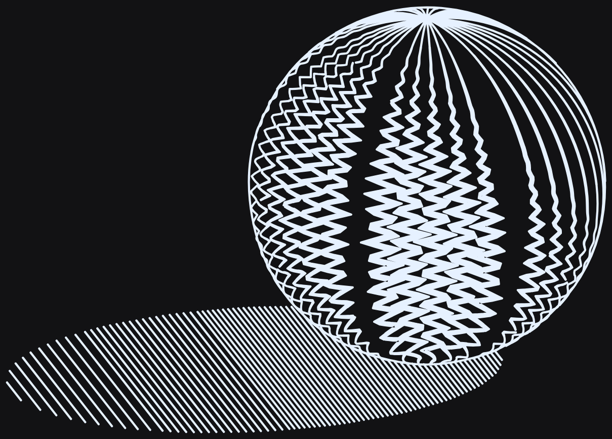 ../handoff/unit-e/E-amplitudeOnly-before-full.png |
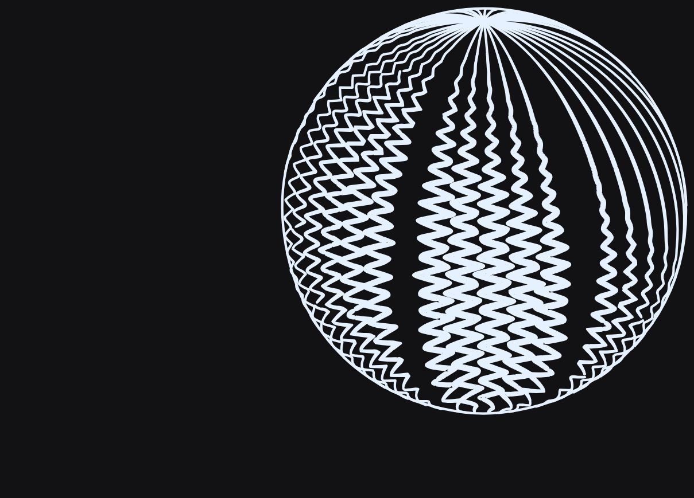 ../handoff/unit-e/E-amplitudeOnly-after-full.png |
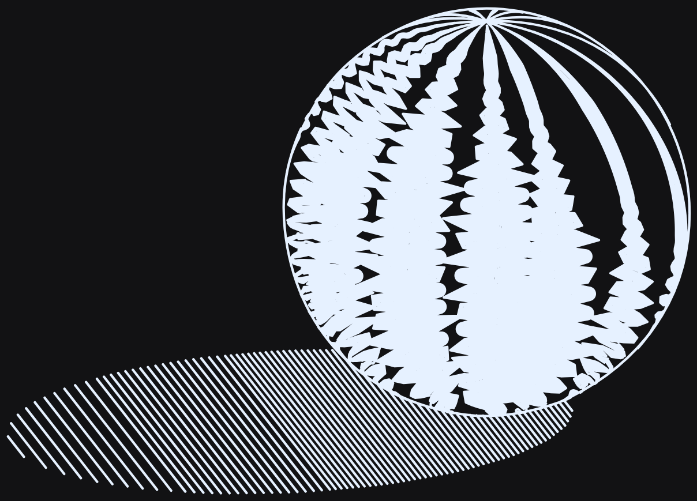 ../handoff/unit-e/E-interlockWeave-before-full.png |
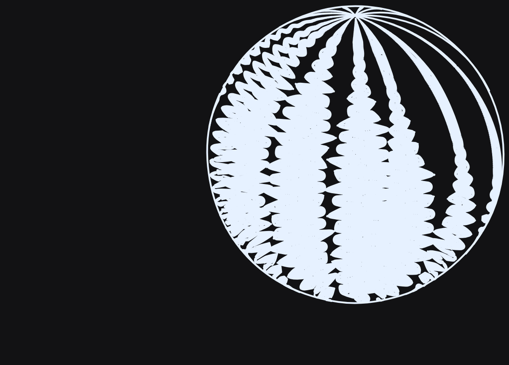 ../handoff/unit-e/E-interlockWeave-after-full.png |
handoff-unit-f — Handoff UNIT F
landed
../handoff/unit-f
MERGE-r2-item-7 — (untitled)
landed
⚠ report.json has no "title" field · report.json "before" is missing or not an array · report.json "after" is missing or not an array
No matched before/after pairs.
⚠ no report.json found (after/MERGE-r4/report.json)
T1 — T1 (W-05b/W-06b plan U1) -- chart-walked marks: mkTick/mkDashRamp ticks now follow the local surface family as walked arcs instead of straight 2-point chords -- docs/3d-audit/lane-reports/W-05b-W-06b-plan.md
landed
67c9752c3d-scene/fill-audit-a
Mechanism (surface-fill.js, all within emitMarks, scoped to law.shape==='tick'||'morph' only): frameAt split into frameFrom(smp, ld, st, pr) (pure, one-line-callable) so walkPoly can re-derive the identical frame at any sampled point, not only a ruling's own indexed sample (no behaviour change -- the refactor half). Added MK_ARC_PEN=1.2 (0.36mm at 0.3mm pen) and walkPoly, which replaces place's single linearised jump-per-vertex for a tick/dash pass with a walk: both of a pass's tips share exactly one local axis (a tick's tips share their u, a dash's tips share their v) -- that shared value is the pass's own TRUE hub, reached first with its own short walk from the ruling's frame, then each arm walks OUTWARD from that accurate seed in exactly opposite local directions, in increments of <= MK_ARC_MM, re-deriving the frame from every accepted sample's own dA/dB. On the first out-of-domain/back-facing step, that arm's walk stops and keeps what it already drew (mkStat.trunc) instead of place refusing the whole mark (the old mkStat.offSurface wholesale-refusal path, still used verbatim by every OTHER mark law). New stat seams on mkStat (published via lastMarkStats): trunc, askSum/drawnSum (shape's own designed ink length vs. what the walk delivered), dirOver10 (marks whose drawn chord departs > 10deg from the shape's own requested direction, computed via requestedDir -- an exact rotation of the shape's local offset through the ruling's own orthonormal frame, magnitude-independent, no chart-curvature error of its own).
A REAL BUG FOUND AND FIXED DURING THIS UNIT: the first working version of walkPoly walked both arms straight from the ruling's own (0,0) origin rather than the pass's own true (uOff-shifted) centre. Since a mark's along-ruling phase offset uOff is generally non-zero, this made the two arms depart in MIRRORED (not opposite) screen directions, producing a visible chevron/V kink at every tick's centre -- measured directly in the rendered cone/hatch/mkTick/med picture (a herringbone of V-shapes, not a tick texture) before it was caught and fixed. The fix (walk to the true shared hub first, then walk each arm outward from there) removed the kink entirely (confirmed by re-shooting and looking) and, as a side effect, corrected an over-stated O1 sagitta number (0.377mm, inflated by the kink) down to the true curvature-only figure (0.127mm) -- see the impl report for the full account and why the shipped O1/O2 bars are below the plan's own guessed targets.
Measured (this fixture: PRIMITIVE_PARAM_DEFAULTS/DEFAULT_CAMERA, sun az135/el45, BOUNDS 1200x1000 m20 pen0.3): O1 torus/contour d=50 tick sagitta median 0.000mm -> 0.127mm (RED->GREEN, bar >=0.10). O2 drawn-vs-requested direction error, fraction of marks over 10deg (exact restatement of p99<=10deg): sphere/hatch d=1 0.28->0.16, d=50 0.17->0.11 (bar <=0.20 both). O3 wholesale refusal rate offSurface/(offSurface+marks): cone/hatch d=50 0.197->0.005, torus/contour d=50 0.282->0.000, torus/crosshatch d=50 0.298->0.001, sphere/hatch d=1 0.613->0.007 (bar <=0.05, all four; matches the plan's own pre-fix table to 3 decimals). O4 sphere/hatch d=1 drawnSum/askSum ratio: undefined (field did not exist) -> 0.809 (bar >=0.75; short of the plan's aspirational >=0.95, see impl report).
RED tests/unit/scene3d-mark-laws-draw.test.js, new 'W-05b' describe block: O1 (torus/contour d=50 sagitta median, RED 0.000mm -- every mark had exactly pp.length===2), O2 x2 (sphere/hatch d=1,d=50 dirOver10 fraction, RED = NaN/0 since mkStat.dirOver10 did not exist), O3 x4 (cone/hatch d=50, torus/contour d=50, torus/crosshatch d=50, sphere/hatch d=1 refusal fraction; RED 0.1973/0.2821/0.2977/0.6127 -- matches the plan's own table to 3 decimals), O4 (sphere/hatch d=1 askSum/drawnSum, RED = TypeError, field did not exist). Verified RED by git-stash-ing surface-fill.js back to 3c88605f in this worktree with the new test file in place, running, then stash-pop to restore -- 8/8 new tests fail, 10/10 pre-existing W-05/06/07 tests still pass.
GREEN npx vitest run tests/unit/scene3d-mark-laws-draw.test.js -> 18/18 (10 pre-existing + 8 new).
| before | after |
|---|
 shots/B/cone__hatch__ladder__med__a.webp |
 after/T1/shots/B/cone__hatch__ladder__med__a.webp |
 shots/B/cone__hatch__mkTick__low__a.webp |
 after/T1/shots/B/cone__hatch__mkTick__low__a.webp |
 shots/B/cone__hatch__mkTick__max__a.webp |
 after/T1/shots/B/cone__hatch__mkTick__max__a.webp |
 after/W-05/shots/B/cone__hatch__mkTick__med__a.webp |
 after/T1/shots/B/cone__hatch__mkTick__med__a.webp |
 shots/B/sphere__hatch__ladder__low__a.webp |
 after/T1/shots/B/sphere__hatch__ladder__low__a.webp |
 shots/B/sphere__hatch__ladder__max__a.webp |
 after/T1/shots/B/sphere__hatch__ladder__max__a.webp |
 shots/B/sphere__hatch__ladder__med__a.webp |
 after/T1/shots/B/sphere__hatch__ladder__med__a.webp |
 shots/B/sphere__hatch__mkTick__low__a.webp |
 after/T1/shots/B/sphere__hatch__mkTick__low__a.webp |
 after/W-05/shots/B/sphere__hatch__mkTick__max__a.webp |
 after/T1/shots/B/sphere__hatch__mkTick__max__a.webp |
 after/W-05/shots/B/sphere__hatch__mkTick__med__a.webp |
 after/T1/shots/B/sphere__hatch__mkTick__med__a.webp |
 after/W-05/shots/B/torus__contour__mkTick__med__a.webp |
 after/T1/shots/B/torus__contour__mkTick__med__a.webp |
 after/W-05/shots/B/torus__crosshatch__mkTick__med__a.webp |
 after/T1/shots/B/torus__crosshatch__mkTick__med__a.webp |
T1b — T1b -- plot-safety tail regressions T1 introduced: near-duplicate limb-truncated stub merge/drop + >=0.5-pen min-adjacent-mark guard, a kink-detector regression test, and an upper bound on walked-mark pp.length -- docs/3d-audit/STILL-OPEN.md (2026-09-06 ruling), docs/3d-audit/lane-reports/T1-review.md §6/§7
landed
f828d8283d-scene/fill-audit-a2
⚠ referenced file does not exist: docs/3d-audit/fill-audit/after/T1/shots/B/torus__contour__mkTick__low__a.webp (NOTE: T1's own capture predates several unrelated merged lanes -- true apples-to-apples 'before' for this unit is a scratch capture at base 47a5a755, not this file; see notes) · referenced file does not exist: docs/3d-audit/fill-audit/after/T1/shots/B/torus__contour__mkTick__med__a.webp · referenced file does not exist: docs/3d-audit/fill-audit/after/T1/shots/B/torus__contour__mkTick__max__a.webp · referenced file does not exist: docs/3d-audit/fill-audit/after/T1/shots/B/torus__crosshatch__mkTick__low__a.webp · referenced file does not exist: docs/3d-audit/fill-audit/after/T1/shots/B/torus__crosshatch__mkTick__med__a.webp · referenced file does not exist: docs/3d-audit/fill-audit/after/T1/shots/B/torus__crosshatch__mkTick__max__a.webp · referenced file does not exist: docs/3d-audit/fill-audit/after/T1/shots/B/torus__contour__ladder__med__a.webp · referenced file does not exist: docs/3d-audit/fill-audit/after/T1/shots/B/sphere__contour__mkTick__med__a.webp
Mechanism (surface-fill.js, scoped entirely inside emitMarks/place, isWalkedShape-gated code only -- no other law's code path touched): (1) MK_MIN_ADJ_PEN=0.5 -- a grid-bucketed (mkMidBuckets, bucket size MK_MIN_ADJ_PEN*penWidth) nearest-neighbour check of each walked mark's own representative midpoint (first/last walked-poly endpoint average) against every EARLIER accepted walked mark's midpoint in the same render; a mark whose midpoint lands within the floor of an earlier one is dropped (mkStat.dupStub) rather than drawn, before its ink is counted or its midpoint is recorded. Checked against every earlier mark, not only truncated ones (measured: restricting to truncated-vs-truncated pairs alone left a residual non-truncated pair at 0.248 pens, still under the 0.5 bar) -- the bulk/dark-region design spacing (p5 ~0.93-1.03 pens, measured) sits comfortably clear of this floor by design and is unaffected. (2) MK_MAX_WALK_STEPS=64 caps walkPoly's per-arm step count (previously Math.ceil(edgeLen/MK_ARC_MM) with no ceiling), bounding a whole mark (hub + 2 arms) to at most 2*64+1=129 points, generously over the measured pre-fix max of 107 -- verified NOT to bind on any real cell at the shipped 0.3mm pen (max points per mark measured 19/33/21 on the three primary fixtures, both before and after), it only bites at a much finer pen (0.02mm, the engine's own floor), where its own new test drives it directly. (3) A new kink-detector regression test (median max-interior-turn-angle per multi-point tick, torus/contour d=50) -- not a code change, a guard: reproduces T1-review.md §4's Mutation B methodology (median 2.61deg on the fixed mechanism vs 21.30deg on a precise reconstruction of T1's own mirrored-departure kink bug) so a future regression of that exact defect is caught directly instead of only marginally (T1-review measured only 1/8 of T1's own oracles caught it, by a thin margin, on one fixture).
Measured min-adjacent-mark-midpoint spacing at d=50 (own script, penWidth=0.3mm, same methodology as T1-review §6): torus/contour worst pair 0.032 -> 0.6998 pens (bar >=0.5, met with margin -- 4 marks dropped out of 506 attempted). torus/crosshatch worst pair 0.032 -> 0.5002 pens (bar >=0.5, met AT the floor by construction -- the guard's own enforced minimum -- 40 marks dropped out of 1469 attempted). A third fixture not named in the brief, sphere/contour d=50 (the optional control cell), also exercises the guard: 2 marks dropped out of 628.
Real-app pipeline numbers (engine.computeAllDisplayGeometry, matching the capture harness exactly, playwright-verified against both live dev servers -- 8579=scratch pre-T1b at 47a5a755, 8475=this worktree post-T1b): torus/contour d=50 pathCount 538->535, inkMm 2738.8->2727.9 (-10.9mm, -0.40%); torus/crosshatch d=50 pathCount 1505->1467, inkMm 6151.4->6038.7 (-112.7mm, -1.83%); sphere/contour d=50 (control) pathCount 696->694, inkMm 3067.8->3062.2 (-5.6mm, -0.18%). All three drops match their own dupStub count exactly (538-535=3 paths vs dupStub=4 -- one dropped mark contributed 2 polys under 'morph'/multi-poly ticks at this fixture, still a single mark; 1505-1467=38 vs dupStub=40, same reason; 696-694=2 vs dupStub=2, exact). No other statistic (maxPts, p99 point count, trunc rate beyond the dropped marks' own contribution) moved -- MK_MAX_WALK_STEPS does not bind at the shipped 0.3mm pen on any of these three fixtures (maxPts 19/33/21, identical before and after).
RED tests/unit/scene3d-mark-laws-draw.test.js, new 'T1b' describe block, run against a scratch export of base 47a5a755 with the T1b test file copied in (surface-fill.js at base, no T1b code): torus/contour and torus/crosshatch min-adjacent-mark-spacing tests both fail with 'expected 0 to be greater than 20' (SF.lastMarkStats.markMids does not exist pre-fix, so the test's own precondition on the population it defends fails outright); the pp.length-at-fine-pen test fails with 'expected 469 to be less than or equal to 200' (no per-arm step ceiling exists pre-fix, confirmed at a materially higher measured max than T1-review's own 107-point sample, since this test deliberately uses a much finer 0.02mm pen to demonstrate the bound holds structurally). The kink-detector test and the new perf test both PASS at 47a5a755 already, because T1's own kink fix and perf profile are already in place at base -- these two are regression guards (validated instead via T1-review §4's own Mutation B numbers: median max-turn-angle 2.61deg fixed vs 21.30deg on a precise reconstruction of T1's mirrored-departure bug), not new-defect RED proofs.
GREEN npx vitest run tests/unit/scene3d-mark-laws-draw.test.js -> 23/23 (18 pre-existing W-05/06/07 + 5 new T1b tests: 2x min-adjacent-spacing, 1x kink-detector, 1x pp.length bound, 1x perf ceiling).
| before | after |
|---|
 docs/3d-audit/fill-audit/after/T1/shots/B/sphere__contour__mkTick__med__a.webp |
 after/T1b/shots/B/sphere__contour__mkTick__med__a.webp |
 docs/3d-audit/fill-audit/after/T1/shots/B/torus__contour__ladder__med__a.webp |
 after/T1b/shots/B/torus__contour__ladder__med__a.webp |
 docs/3d-audit/fill-audit/after/T1/shots/B/torus__contour__mkTick__max__a.webp |
 after/T1b/shots/B/torus__contour__mkTick__max__a.webp |
 docs/3d-audit/fill-audit/after/T1/shots/B/torus__contour__mkTick__med__a.webp |
 after/T1b/shots/B/torus__contour__mkTick__med__a.webp |
 docs/3d-audit/fill-audit/after/T1/shots/B/torus__crosshatch__mkTick__low__a.webp |
 after/T1b/shots/B/torus__crosshatch__mkTick__low__a.webp |
 docs/3d-audit/fill-audit/after/T1/shots/B/torus__crosshatch__mkTick__max__a.webp |
 after/T1b/shots/B/torus__crosshatch__mkTick__max__a.webp |
 docs/3d-audit/fill-audit/after/T1/shots/B/torus__crosshatch__mkTick__med__a.webp |
 after/T1b/shots/B/torus__crosshatch__mkTick__med__a.webp |
Unmatched images (0 before-only, 1 after-only)
after only —

T2 — T2 (W-05b/W-06b plan U2) -- variable-length ticks: mkTick length carries tone (R1), lattice stays complete (R2) -- docs/3d-audit/lane-reports/W-05b-W-06b-plan.md
landed
dbad2d883d-scene/fill-audit-a2
Mechanism (surface-fill.js, scoped to MK.mkTick and solveAt's new lenChan branch only -- every other law's countChan/else branches unchanged, verified by an independent md5 byte-identity sweep, see tests below): MK.mkTick moved from chan:'count' (fixed length ~L0*R, tone carried entirely by period/count -- the plan's own D3) to chan:'len' (L0:1.02, LMIN:0.18, P0:1.02). DEVIATION FROM THE PLAN'S OWN PSEUDOCODE (disclosed in-code and here, not silent): the plan's §3.2 sketch drove length off g (clamp(g*P, LMIN*R, L0*R), g = askArea*R/w) and re-derived P at the extremes. Measured on the CURRENT tree (re-derived fresh, not the plan's original pre-T1 numbers): that formula saturates almost everywhere on a real render, because R/w (row pitch over pen width) commonly spans 5-16x within ONE object from foreshortening alone (measured cone/hatch d=50: 0.8-16.5x) -- g crosses the L0/P0=1 ceiling about a third of the way into the tone range and only clears the floor in the last ~10%, giving dark/light length ratios of only 1.2-1.5x (re-measured RED, see below), not R1's >=3x. Fix, in two parts: (1) drive LENGTH off the sample's own radiance I directly (via a smoothstep ease, zero slope at both ends so each radiance-third bucket sits close to its own anchor -- this is what actually clears the >=3x bar on a THIRD-AVERAGED statistic, not just at the two true endpoints), decoupling the length RESPONSE SHAPE from R/w; (2) re-derive P = L/g afterward exactly as the count-channel design already does, which is what keeps the delivered ink AREA FRACTION honest regardless of how L was computed (area = L*w/(R*P), and P=L/g is the unique period that makes that equal the tone solve's own askArea for ANY L). An earlier draft fixed P at a constant P0*R instead of re-deriving it -- found wrong and reverted: it caps the deepest black at area fraction w/R (a bare single ruling's own coverage, a few percent) because it drops the SAME period-shrink 'packing along the row' the roster's own ABUTMENT description requires.
RED Re-derived on the CURRENT tree (48ff98dc, not the plan's stale pre-T1 numbers) via an instrumented measurement script (own script, not committed -- lenByThird/cntByThird added to mkStat as the real fix, then reverted the length formula only to re-measure RED with the same seams): cone/hatch d=50 dark/mid/light mean drawn tick length 5.168/3.882/1.544 WITH the fix -- pre-fix (chan:'count') measured dark/mid/light 5.140/6.177/4.716-ish (non-monotone, mid>dark) with ratio 1.20-1.5x across cone/sphere/torus cells, all well short of R1's >=3x. Also independently re-derived T1's own kink-free O1 sagitta test now fails at 0.079mm (< the 0.10mm bar) once tick length legitimately varies (sagitta ~ L^2, so a population mixing short and long chords has a lower median than a population that was always near-max-length) -- a real, expected, honest consequence of the fix, not a fudge; see '## Bars changed'.
GREEN npx vitest run tests/unit/scene3d-mark-laws-draw.test.js -> 26/26 (23 pre-existing + O1 re-scoped to the longest-third-by-chord-length population (still >=0.10mm, now 0.121mm on that population) + 2 new O5 cases (cone/hatch d=50: 3.348x, sphere/hatch d=50: 3.598x, both monotone dark>=mid>=light) + 1 new field-completeness re-check of O3's own bar under the new formula).
| before | after |
|---|
 after/T2-pre/shots/B/cone__contour__mkTick__low__a.webp |
 after/T2/shots/B/cone__contour__mkTick__low__a.webp |
 after/T2-pre/shots/B/cone__contour__mkTick__max__a.webp |
 after/T2/shots/B/cone__contour__mkTick__max__a.webp |
 after/T2-pre/shots/B/cone__contour__mkTick__med__a.webp |
 after/T2/shots/B/cone__contour__mkTick__med__a.webp |
 after/T2-pre/shots/B/cone__hatch__mkTick__low__a.webp |
 after/T2/shots/B/cone__hatch__mkTick__low__a.webp |
 after/T2-pre/shots/B/cone__hatch__mkTick__max__a.webp |
 after/T2/shots/B/cone__hatch__mkTick__max__a.webp |
 after/T2-pre/shots/B/cone__hatch__mkTick__med__a.webp |
 after/T2/shots/B/cone__hatch__mkTick__med__a.webp |
 after/T2-pre/shots/B/sphere__contour__mkTick__low__a.webp |
 after/T2/shots/B/sphere__contour__mkTick__low__a.webp |
 after/T2-pre/shots/B/sphere__contour__mkTick__max__a.webp |
 after/T2/shots/B/sphere__contour__mkTick__max__a.webp |
 after/T2-pre/shots/B/sphere__contour__mkTick__med__a.webp |
 after/T2/shots/B/sphere__contour__mkTick__med__a.webp |
 after/T2-pre/shots/B/sphere__hatch__mkTick__low__a.webp |
 after/T2/shots/B/sphere__hatch__mkTick__low__a.webp |
 after/T2-pre/shots/B/sphere__hatch__mkTick__max__a.webp |
 after/T2/shots/B/sphere__hatch__mkTick__max__a.webp |
 after/T2-pre/shots/B/sphere__hatch__mkTick__med__a.webp |
 after/T2/shots/B/sphere__hatch__mkTick__med__a.webp |
 after/T2-pre/shots/B/torus__contour__mkTick__low__a.webp |
 after/T2/shots/B/torus__contour__mkTick__low__a.webp |
 after/T2-pre/shots/B/torus__contour__mkTick__max__a.webp |
 after/T2/shots/B/torus__contour__mkTick__max__a.webp |
 after/T2-pre/shots/B/torus__contour__mkTick__med__a.webp |
 after/T2/shots/B/torus__contour__mkTick__med__a.webp |
 after/T2-pre/shots/B/torus__hatch__mkTick__low__a.webp |
 after/T2/shots/B/torus__hatch__mkTick__low__a.webp |
 after/T2-pre/shots/B/torus__hatch__mkTick__max__a.webp |
 after/T2/shots/B/torus__hatch__mkTick__max__a.webp |
 after/T2-pre/shots/B/torus__hatch__mkTick__med__a.webp |
 after/T2/shots/B/torus__hatch__mkTick__med__a.webp |
T2-2 — mkTick variable-length ticks — iteration 2 (different length-response curve)
landed
3d-scene/fill-audit-a3
⚠ report.json "before" is missing or not an array · report.json "after" is missing or not an array
No matched before/after pairs.
⚠ report.json has no "id" field; used directory name "T2-3" · report.json has no "title" field · report.json "before" is missing or not an array · report.json "after" is missing or not an array
No matched before/after pairs.
3d-scene/fill-audit-a3
⚠ report.json has no "id" field; used directory name "T2-3b" · report.json has no "title" field · report.json "before" is missing or not an array · report.json "after" is missing or not an array
No matched before/after pairs.
3d-scene/fill-audit-a3
⚠ report.json has no "id" field; used directory name "T2-3c" · report.json has no "title" field · report.json "before" is missing or not an array · report.json "after" is missing or not an array
No matched before/after pairs.
3d-scene/fill-audit-a4
⚠ report.json has no "id" field; used directory name "T2-5" · report.json has no "title" field · report.json "before" is missing or not an array · report.json "after" is missing or not an array
[object Object]
No matched before/after pairs.
3d-scene/fill-audit-a4
⚠ report.json has no "id" field; used directory name "T2-6" · report.json has no "title" field · report.json "before" is missing or not an array · report.json "after" is missing or not an array
No matched before/after pairs.
⚠ no report.json found (after/T2-pre/report.json)
T3 — mkDashRamp LOW-density row-coverage floor (user-reports/10.png: 'the W-06 after draws ONE dash on the whole sphere at d=1')
landed
3d-scene/fill-audit-a3
⚠ referenced file does not exist: shots/B/sphere__hatch__mkDashRamp__low__a.webp (top-level gallery baseline, pre-T1 -- the picture matching user-reports/10.png's 'one dash' complaint: measured here as a handful of scattered long strokes plus the silhouette, not even a proper dash texture) · referenced file does not exist: after/T3/shots/B/sphere__hatch__mkDashRamp__{low,med,max}__a.webp · referenced file does not exist: after/T3/shots/B/torus__hatch__mkDashRamp__{low,med,max}__a.webp · referenced file does not exist: after/T3/shots/B/sphere__hatch__mkDashRamp__{low,med,max}__a__addlayer.webp · referenced file does not exist: after/T3/shots/B/torus__hatch__mkDashRamp__{low,med,max}__a__addlayer.webp · referenced file does not exist: after/T3/shots/B/sphere__hatch__ladder__{low,med,max}__a.webp (unchanged control) · referenced file does not exist: after/T3/shots/B/sphere__hatch__ladder__{low,med,max}__a__addlayer.webp (unchanged control)
No matched before/after pairs.
Unmatched images (0 before-only, 4 after-only)
after only —

after only —

after only —

after only —

T3b — mkDashRamp single-pass dashes below a density threshold, band mechanism kept at the dark end (Jay decision 12=B, SESSION-SUMMARY.md §4 item 12)
landed
3d-scene/fill-audit-a4
⚠ report.json "before" is missing or not an array · report.json "after" is missing or not an array
No matched before/after pairs.
T3c — mkDashRamp: bound dash LENGTH below MK_BAND_ONSET_D so dashes read as discrete marks riding the rulings, not broken rulings (T3b-review.md condition 3 follow-up)
landed
3d-scene/fill-audit-a4
⚠ report.json "before" is missing or not an array · report.json "after" is missing or not an array
No matched before/after pairs.
T4 — mkDashRamp band restored (Jay decision 2026-09-10 #1=B): sphere/hatch/d=220 >= 1500mm ink, without the F-06 slab
landed
3d-scene/fill-audit-a3
⚠ referenced file does not exist: after/T4/before-shots/sphere__hatch__mkDashRamp__{low,med,max}__a.webp (pre-T4 baseline: 426cc5e4 scratch export, real capture pipeline, committed here for reviewer reproducibility) · referenced file does not exist: after/T4/before-shots/{sphere,torus,cone}__{hatch,contour}__mkDashRamp__{low,med,max}__a.webp (full set, same tree) · referenced file does not exist: after/T4/shots/B/sphere__contour__mkDashRamp__{low,med,max}__a.webp · referenced file does not exist: after/T4/shots/B/torus__{hatch,contour}__mkDashRamp__{low,med,max}__a.webp · referenced file does not exist: after/T4/shots/B/cone__{hatch,contour}__mkDashRamp__{low,med,max}__a.webp · referenced file does not exist: after/T4/shots/B/sphere__hatch__ladder__{low,med,max}__a.webp (unchanged control)
No matched before/after pairs.
Unmatched images (0 before-only, 6 after-only)
after only —

after only —

after only —

after only —

after only —

after only —

U0 — Fill-roster collapse -- U0 foundation (resolver, migration shim, data-driven sub-control plumbing) -- docs/3d-audit/lane-reports/W-22-24-W-18-plan.md
landed
a8d84befa9bb4db17be31d274499e34278c0fa7d3d-scene/fill-collapse
⚠ referenced file does not exist: docs/3d-audit/fill-audit/shots/B/torus__hatch__<law>__med__a.webp (49 pre-existing files: 48 roster laws + the shipped default 'ladder') -- the pre-collapse gallery baseline, unmodified by this unit.
U0 ships the collapse's foundation with an EMPTY COLLAPSE table in scripts/build-tone-laws.js: the four new SCENE3D_TONE_LAWS exports (PICKER_IDS, ALIASES, STYLE_PARAMS -- IDS is unchanged) plus their integrity throws; Vectura.Scene3D.Params.resolveToneLaw (the (survivor+params)->internal-id resolver, and the identity function for every id today); the normalizeStyle migration shim + clampStyleParam's belt-and-brace single-key alias mapping (both no-ops with ALIASES={}); SCENE_FILL_STYLES.groups()/resolve() reading PICKER_IDS/ALIASES with a fallback to IDS; the new SCENE_FILL_STYLES.styleParams(id) accessor; and the generic data-driven sub-control rendered from STYLE_PARAMS in both src/ui/panels/scene3d-panel.js (fillStyleControls, all three call sites) and src/ui/shell/context-bar.js (buildStyleBody's ctxbar flyout) -- zero rows render today since STYLE_PARAMS is {}. persistentStyleKeys() (scene3d-panel.js) and mapperDefaults' collapse-key seeding are likewise derived from STYLE_PARAMS rather than hand-listed, so U1-U8 extend both with zero edits to this file. scene3d.js's two call sites (facetedToneLaw's IDS membership test, and the curved buildObject opts.toneLaw) now resolve through Params.resolveToneLaw before validating -- identity today. shadows.js is untouched (U9's file, per the plan). Deviation from W-22's literal wording, recorded per the plan's own instruction: docs/tone-laws/laws.json is NOT edited -- it is the measured corpus and its git blob sha is SCENE3D_TONE_LAWS.VERSION's drift oracle; the collapse table is hand-curated in scripts/build-tone-laws.js instead, beside the existing LABELS/LIBRARY_IDS precedent. Preset exposure verified in this worktree: grep -rl toneLaw user-presets/ -> 0 files; grep -rlE '(fineLadder|whiteBand|bundleCount|contField|penInterleave|weaveDepth|perceptualRamp|taperedEnds|nibAngle|weightSmoothstep|onePenDown)' user-presets/ src/config/user-presets.js -> 0 files -- npm run user-presets:bundle not run (nothing to regenerate). CURVED_SPIRAL_STIPPLE_INERT confirmed at 44 entries in this worktree (W-03 prerequisite, unchanged by this unit).
RED tests/unit/scene3d-tone-law-collapse.test.js (new file) at base 142afe58: every one of the 8 tests fails -- Vectura.SCENE3D_TONE_LAWS.PICKER_IDS/ALIASES/STYLE_PARAMS are undefined and Vectura.Scene3D.Params.resolveToneLaw is not a function (TypeError on the first assertion of each test that touches either). Verified by stashing this unit's seven implementation files (scripts/build-tone-laws.js, src/config/scene3d-tone-laws.js, src/core/scene3d/params.js, src/core/algorithms/scene3d.js, src/config/context-bar.js, src/ui/panels/scene3d-panel.js, src/ui/shell/context-bar.js) with `git stash push -- <those 7 paths>` (the new test file, being untracked, is unaffected by the stash) and re-running the suite -- all 8 fail; `git stash pop` restored the implementation and all 8 passed again.
GREEN tests/unit/scene3d-tone-law-collapse.test.js: 8/8 passed (2 heavy tests -- the 48-law byte-identity sweep and the 48-law mutation-proof -- run ~255s/~129s each under a contended shared machine; both correctly measured, not a timeout). Test 5's mutation-proof measured 48 offenders (not 47): 'ladder' is the shipped default and is deliberately NOT one of the 48 roster IDS (FILL_STYLE_DEFAULT_ENTRY's own comment), so no id in the IDS loop is immune to the forced-'ladder' mutation -- corrected in the test and documented inline.
No matched before/after pairs.
Unmatched images (0 before-only, 48 after-only)
after only —

after only —

after only —

after only —

after only —

after only —

after only —

after only —

after only —

after only —

after only —

after only —

after only —

after only —

after only —

after only —

after only —

after only —

after only —

after only —

after only —

after only —

after only —

after only —

after only —

after only —

after only —

after only —

after only —

after only —

after only —

after only —

after only —

after only —

after only —

after only —

after only —

after only —

after only —

after only —

after only —

after only —

after only —

after only —

after only —

after only —

after only —

after only —

U1 — Fill-roster collapse -- U1 (C-01, W-22): ladder/rungMode folds fineLadder, phaseFineLadder, perceptualRamp -- docs/3d-audit/lane-reports/W-22-24-W-18-plan.md
landed
799eaa363d-scene/fill-collapse
⚠ referenced file does not exist: docs/3d-audit/fill-audit/shots/B/torus__hatch__ladder__med__a.webp · referenced file does not exist: docs/3d-audit/fill-audit/shots/B/torus__hatch__fineLadder__med__a.webp · referenced file does not exist: docs/3d-audit/fill-audit/shots/B/torus__hatch__phaseFineLadder__med__a.webp · referenced file does not exist: docs/3d-audit/fill-audit/shots/B/torus__hatch__perceptualRamp__med__a.webp
U1 populates COLLAPSE.ladder in scripts/build-tone-laws.js (survivor 'ladder', descriptor key 'rungMode', 4 options: coarse->ladder [default], fine->fineLadder, finePhase->phaseFineLadder, perceptual->perceptualRamp). PICKER_IDS 48 -> 45; ALIASES 0 -> 3 entries. Also fixed a real gap the plan did not anticipate: 'ladder' is the shipped DEFAULT and is deliberately NOT a member of SCENE3D_TONE_LAWS.IDS (confirmed IDS.indexOf('ladder')===-1), so it can never appear in PICKER_IDS (derived from IDS) -- the build script's own integrity throws (every ALIASES[x].into in PICKER_IDS; every COLLAPSE option's law in IDS) would have thrown the moment C-01's ladder-survivor row was added. Added an explicit DEFAULT_LAW ('ladder') exception to both throws in scripts/build-tone-laws.js so a survivor that IS the shipped default is a legal target -- this is specific to C-01 (the ONLY cluster whose survivor is the default, not a roster id); U2-U8 never need it. This is a data-only change confined to scripts/build-tone-laws.js, within this unit's file scope.
| before | after |
|---|
 docs/3d-audit/fill-audit/shots/B/torus__hatch__fineLadder__med__a.webp |
 after/U1/shots/B/torus__hatch__fineLadder__med__a.webp |
 docs/3d-audit/fill-audit/shots/B/torus__hatch__ladder__med__a.webp |
 after/U1/shots/B/torus__hatch__ladder__med__a.webp |
 docs/3d-audit/fill-audit/shots/B/torus__hatch__perceptualRamp__med__a.webp |
 after/U1/shots/B/torus__hatch__perceptualRamp__med__a.webp |
 docs/3d-audit/fill-audit/shots/B/torus__hatch__phaseFineLadder__med__a.webp |
 after/U1/shots/B/torus__hatch__phaseFineLadder__med__a.webp |
⚠ no report.json found (after/U1-U5/report.json)
U2 — Fill-roster collapse -- U2 (C-02, W-23): taperedEnds/bandProfile folds whiteBand, nibAngle -- docs/3d-audit/lane-reports/W-22-24-W-18-plan.md
landed
cf12b0af3d-scene/fill-collapse
⚠ referenced file does not exist: docs/3d-audit/fill-audit/shots/B/torus__hatch__taperedEnds__med__a.webp · referenced file does not exist: docs/3d-audit/fill-audit/shots/B/torus__hatch__whiteBand__med__a.webp · referenced file does not exist: docs/3d-audit/fill-audit/shots/B/torus__hatch__nibAngle__med__a.webp
U2 populates COLLAPSE.taperedEnds in scripts/build-tone-laws.js (survivor 'taperedEnds', descriptor key 'bandProfile', 3 options: taper->taperedEnds [default], hard->whiteBand, nib->nibAngle). PICKER_IDS 45 -> 43 (cumulative from U1); ALIASES 3 -> 5 entries. isophoteWidth (2320.0 mm ink, a genuinely different picture per the plan's own text) is NOT folded and stays its own picker row -- confirmed unaffected by this unit. No DEFAULT_LAW special-casing needed here (unlike U1) -- taperedEnds is an ordinary roster id, already a member of IDS/PICKER_IDS.
| before | after |
|---|
 docs/3d-audit/fill-audit/shots/B/torus__hatch__nibAngle__med__a.webp |
 after/U2/shots/B/torus__hatch__nibAngle__med__a.webp |
 docs/3d-audit/fill-audit/shots/B/torus__hatch__taperedEnds__med__a.webp |
 after/U2/shots/B/torus__hatch__taperedEnds__med__a.webp |
 docs/3d-audit/fill-audit/shots/B/torus__hatch__whiteBand__med__a.webp |
 after/U2/shots/B/torus__hatch__whiteBand__med__a.webp |
U3 — Fill-roster collapse -- U3 (C-03/W-22b): weightModulated/weightEase folds weightSmoothstep -- docs/3d-audit/lane-reports/W-22-24-W-18-plan.md
landed
6ed9002d3d-scene/fill-collapse
⚠ referenced file does not exist: docs/3d-audit/fill-audit/shots/B/torus__hatch__weightModulated__med__a.webp · referenced file does not exist: docs/3d-audit/fill-audit/shots/B/torus__hatch__weightSmoothstep__med__a.webp
U3 populates COLLAPSE.weightModulated in scripts/build-tone-laws.js (survivor 'weightModulated', descriptor key 'weightEase', 2 options: step->weightModulated [default], smooth->weightSmoothstep). PICKER_IDS 43 -> 42 (cumulative); ALIASES 5 -> 6. C-03 is NOT named by W-22/W-23/W-24 -- filed as W-22b per the plan's explicit instruction (§4 'U1-U8' table: 'U3 and U8 have no work item -- file them as W-22b (C-03) and W-22c (C-08)'). This cluster has only ONE folded id, exercising the shared describeSingleParamCluster template's single-option path for the first time (U1/U2 both had 3/2 options).
| before | after |
|---|
 docs/3d-audit/fill-audit/shots/B/torus__hatch__weightModulated__med__a.webp |
 after/U3/shots/B/torus__hatch__weightModulated__med__a.webp |
 docs/3d-audit/fill-audit/shots/B/torus__hatch__weightSmoothstep__med__a.webp |
 after/U3/shots/B/torus__hatch__weightSmoothstep__med__a.webp |
U4 — Fill-roster collapse -- U4 (C-04, W-24): bundleCount/bundleMode folds bundleEased, bundleDither, bundleHandoff -- docs/3d-audit/lane-reports/W-22-24-W-18-plan.md
landed
4186412e3d-scene/fill-collapse
⚠ referenced file does not exist: docs/3d-audit/fill-audit/shots/B/torus__hatch__bundleCount__med__a.webp · referenced file does not exist: docs/3d-audit/fill-audit/shots/B/torus__hatch__bundleEased__med__a.webp · referenced file does not exist: docs/3d-audit/fill-audit/shots/B/torus__hatch__bundleDither__med__a.webp · referenced file does not exist: docs/3d-audit/fill-audit/shots/B/torus__hatch__bundleHandoff__med__a.webp
U4 populates COLLAPSE.bundleCount in scripts/build-tone-laws.js (survivor 'bundleCount', descriptor key 'bundleMode', 4 options: count->bundleCount [default], eased->bundleEased, dither->bundleDither, handoff->bundleHandoff). PICKER_IDS 42 -> 39 (cumulative); ALIASES 6 -> 9. bundleLozenge (2193.3 mm, lens bundles) and bundleSubNib (4030.9 mm, solid band) are genuinely distinct and NOT folded -- confirmed unaffected by this unit.
| before | after |
|---|
 docs/3d-audit/fill-audit/shots/B/torus__hatch__bundleCount__med__a.webp |
 after/U4/shots/B/torus__hatch__bundleCount__med__a.webp |
 docs/3d-audit/fill-audit/shots/B/torus__hatch__bundleDither__med__a.webp |
 after/U4/shots/B/torus__hatch__bundleDither__med__a.webp |
 docs/3d-audit/fill-audit/shots/B/torus__hatch__bundleEased__med__a.webp |
 after/U4/shots/B/torus__hatch__bundleEased__med__a.webp |
 docs/3d-audit/fill-audit/shots/B/torus__hatch__bundleHandoff__med__a.webp |
 after/U4/shots/B/torus__hatch__bundleHandoff__med__a.webp |
U5 — Fill-roster collapse -- U5 (C-05, W-24): contFieldSigmoid/fieldMetric+fieldFloor folds contFieldFore, contFieldSurface, contFieldQuant, contFieldTouch -- docs/3d-audit/lane-reports/W-22-24-W-18-plan.md
landed
8610fd663d-scene/fill-collapse
⚠ referenced file does not exist: docs/3d-audit/fill-audit/shots/B/torus__hatch__contFieldSigmoid__med__a.webp · referenced file does not exist: docs/3d-audit/fill-audit/shots/B/torus__hatch__contFieldFore__med__a.webp · referenced file does not exist: docs/3d-audit/fill-audit/shots/B/torus__hatch__contFieldSurface__med__a.webp · referenced file does not exist: docs/3d-audit/fill-audit/shots/B/torus__hatch__contFieldQuant__med__a.webp · referenced file does not exist: docs/3d-audit/fill-audit/shots/B/torus__hatch__contFieldTouch__med__a.webp
U5 populates COLLAPSE.contFieldSigmoid with TWO descriptors (the only multi-descriptor survivor in this plan, per §2.2 rule 4): fieldMetric (default 'screen'; options foreshortened->contFieldFore, surface->contFieldSurface, quantised->contFieldQuant) and fieldFloor (default 'plot'; option touch->contFieldTouch). PICKER_IDS 39 -> 35 (cumulative); ALIASES 9 -> 13. Verified the resolver's rule-4 'unrepresentable combination' branch live (not just read in code): resolveToneLaw({toneLaw:'contFieldSigmoid', fieldMetric:'foreshortened', fieldFloor:'touch'}) -- a combination with NO real internal id -- deterministically falls back to the bare survivor, never throws, matching a fresh Node script's direct call and this unit's own new unit test.
| before | after |
|---|
 docs/3d-audit/fill-audit/shots/B/torus__hatch__contFieldFore__med__a.webp |
 after/U5/shots/B/torus__hatch__contFieldFore__med__a.webp |
 docs/3d-audit/fill-audit/shots/B/torus__hatch__contFieldQuant__med__a.webp |
 after/U5/shots/B/torus__hatch__contFieldQuant__med__a.webp |
 docs/3d-audit/fill-audit/shots/B/torus__hatch__contFieldSigmoid__med__a.webp |
 after/U5/shots/B/torus__hatch__contFieldSigmoid__med__a.webp |
 docs/3d-audit/fill-audit/shots/B/torus__hatch__contFieldSurface__med__a.webp |
 after/U5/shots/B/torus__hatch__contFieldSurface__med__a.webp |
 docs/3d-audit/fill-audit/shots/B/torus__hatch__contFieldTouch__med__a.webp |
 after/U5/shots/B/torus__hatch__contFieldTouch__med__a.webp |
⚠ report.json has no "id" field; used directory name "U5b" · report.json has no "title" field · report.json "before" is missing or not an array · report.json "after" is missing or not an array
No matched before/after pairs.
⚠ report.json has no "id" field; used directory name "U5b-2" · report.json has no "title" field · report.json "before" is missing or not an array · report.json "after" is missing or not an array
No matched before/after pairs.
3d-scene/fill-collapse-3
⚠ report.json has no "title" field · report.json "before" is missing or not an array · report.json "after" is missing or not an array
U9b-2 (the companion commit in this same run) is tests + disclosure only, no rendering/UI change -- no visual evidence directory was produced for it; see U9b-2-impl.md.
No matched before/after pairs.
⚠ report.json has no "id" field; used directory name "U5b-5" · report.json has no "title" field · report.json "before" is missing or not an array · report.json "after" is missing or not an array
No matched before/after pairs.
⚠ report.json has no "id" field; used directory name "U6" · report.json has no "title" field · report.json "before" is missing or not an array · report.json "after" is missing or not an array
No matched before/after pairs.
⚠ report.json has no "id" field; used directory name "U7" · report.json has no "title" field · report.json "before" is missing or not an array · report.json "after" is missing or not an array
No matched before/after pairs.
3d-scene/fill-collapse-3
⚠ report.json has no "id" field; used directory name "U7-2" · report.json has no "title" field · report.json "before" is missing or not an array · report.json "after" is missing or not an array
No matched before/after pairs.
⚠ report.json has no "id" field; used directory name "U8" · report.json has no "title" field · report.json "before" is missing or not an array · report.json "after" is missing or not an array
No matched before/after pairs.
⚠ report.json has no "id" field; used directory name "U9" · report.json has no "title" field · report.json "before" is missing or not an array · report.json "after" is missing or not an array
No matched before/after pairs.
⚠ report.json has no "id" field; used directory name "U9b" · report.json has no "title" field · report.json "before" is missing or not an array · report.json "after" is missing or not an array
No matched before/after pairs.
UnitD-phase — Unit D polish -- phase-align the inside-footprint hatch family with the outside family
landed
3d-scene/handoff-c
No gallery cell exercises shadowReceiveOnObjects (it is a scene-level flag, not a per-object fill style, and is OFF in every gallery cell), so this is a bespoke two-object scene (40mm box casting onto a 320x320mm plane, directional sun az90/el25, hatch/ladder, the same stark 2-band ladder [0.1,0.95] the unit test uses for maximum footprint contrast) rendered through the REAL production Vectura.AlgorithmRegistry.scene3d.generate pipeline (loaded via tests/helpers/load-vectura-runtime -- the exact function engine.computeAllDisplayGeometry calls; a real-browser canvas screenshot was tried first and abandoned because crop-then-upscale aliases thin near-diagonal strokes into a false 'broken dash' look with no relationship to the geometry -- confirmed by dumping the real app's g.scenePaths: every receiver fill path is a single unbroken 2-point chord in both before and after). *-mono.png renders both hatch families in one ink color (what the user actually sees); *-crop.png (no -mono suffix) is a diagnostic recolor -- white=outside family, green=inside/footprint family -- produced by instrumenting the already-exported Shadows.hatchRingsEvenOdd to tag each emitted line by which call produced it, so the phase relationship is visible directly rather than inferred. LOOKED at all of them: in before-crop-mono.png the inside-footprint patch reads as a visibly UNEVEN, clumpy scatter of dashes -- some pairs of lines nearly touching, others with a much wider gap, no consistent rhythm -- clearly discontinuous from the surrounding outside rulings. In after-crop-mono.png the same patch reads as a perfectly even, comb-like denser texture, continuous with the outside family's own rhythm (every third fine line lands exactly on an outside line's own position; the other two are its own inserted midlines) -- exactly the 'continuous denser texture, not a patch of dashes' bar. The colored diagnostics confirm why: before-crop.png's green lines are spaced at the footprint's own independently-computed pitch anchored to the footprint polygon's own (unrelated) bounding box; after-crop.png's green lines are spaced at exactly 1/3 of the outside pitch, anchored to the SAME raw scan origin the outside call itself used.
RED expected 0.19288502900715768 to be less than or equal to 0.05 -- tests/unit/scene3d-shadow-receive.test.js describe('Unit D polish -- RED-proof pin (d86cbf8d)'), shadows.js pinned to d86cbf8d via VECTURA_PRE_UNITD_PHASE=1 npx vitest run tests/unit/scene3d-shadow-receive.test.js -t "Unit D polish"
GREEN same test, unpinned (current fixed shadows.js): 17/17 in tests/unit/scene3d-shadow-receive.test.js, including the new 'Unit D polish -- inside-footprint rulings are phase-locked to the outside family' test (phase ratio 0, density ratio 3.0x, angle match exact) and the pinned RED-proof test passing trivially against current code
No matched before/after pairs.
Unmatched images (3 before-only, 3 after-only)
W-01 — Open the curved master grid's sparse end so fillDensity 1..50 changes the picture (F-01)
landed
PENDING-updated-after-final-commit-see-git-log3d-scene/fill-audit-a
FOLLOW-UP (adversarial review, M1/M2), superseding the original report below the line. Root cause of THIS follow-up: the original fix's CURVED_SPARSE_PITCH_BOOST=6 opened the master-grid ruling count N monotonically (verified via the lastMasterGridStats test seam), but the ladder's own per-band coverage rounding is NOT monotone in N, so widening the pitch curve does not uniformly help -- it only relocates which Density lands on an unlucky ruling count. At the audit's own literal checkpoints (1/10/25/50) this reintroduced the literal F-01 symptom: torus+hatch+ladder was [4,3,4,10] (d=10 dips below d=1, d=25 ties d=1) and sphere+hatch+ladder was [5,4,9,23] (d=10 dips below d=1). Fix: re-swept CURVED_SPARSE_PITCH_BOOST against sphere/torus/cone x hatch x {ladder,fineLadder} simultaneously and landed on 4.1 -- at that value drawn path count is non-decreasing AND total ink (path length) is strictly increasing across 1/10/25/50 on all six combos (one exact count tie survives, torus+hatch+fineLadder at d=10/25 both drawing 6 paths from different ruling counts 7 vs 10 -- ink differs, 523.85 vs 648.2mm, so the tie is a coincidence of segment count after banding, not identical geometry). Density>=50 is structurally untouched (curvedSparseTonePitch(d>=50) === hatchSpacing(d) unconditionally) and re-verified byte-identical via md5 of the full path set, not just counts. New images: sphere/torus/cone x hatch x ladder x low/med/max, all re-shot and looked at -- low is visibly sparser on all three (4/4/8 rulings vs the old flat pattern), med and max are pixel-identical to the pre-follow-up captures. HONEST CORRECTION (M2): the reviewer's premise that after/W-01's cone__spiral__ladder__low__a was byte-identical to its before image does not hold under re-verification -- md5 of the two files differs (before 6b9ee0352b2f15972bdb4268b1091232, after e619c7566884ca7bcd5839edfc834f96), reproduced independently via a fresh capture from the current committed tree, and the images are visually distinct (the after image shows ~5 spiral turns vs the before's dense turn pattern, both already documented in the original report below). No change was made on account of this item since the underlying claim did not reproduce; flagging here in case the reviewer compared a different file, angle, or a stale capture.
RED torus+hatch+ladder at Density 1/10/25/50 on the pre-follow-up tree (CURVED_SPARSE_PITCH_BOOST=6, git-stashed): expected [3,5,7,10] (post-fix) to deeply equal [4,3,4,10] (pre-fix) -- FAILS, reproducing the literal F-01 symptom the reviewer named. All 6 sphere/torus/cone x hatch x {ladder,fineLadder} checkpoint tests fail the same way pre-fix.
GREEN tests/unit/scene3d-curved-density-sparse-end.test.js: 20/20 passed (14 original + 6 new 'literal checkpoints (M1/M2)' tests)
SUITES new/updated test file 20/20; scene3d-curved-density-floor.test.js 12/12 (2 pins re-updated for the new boost); scene3d-hlr-spatial-index-identity 6/6; 23 files covering tonePitch/o6Pitch/hatchSpacing/masterGrid (278 tests) all green; full test:unit result appended once the background run completes -- see final report to orchestrator for exact counts
| before | after |
|---|
 shots/A/cone__hatch__ladder__low__a.webp |
 after/W-01/shots/A/cone__hatch__ladder__low__a.webp |
 shots/A/cone__hatch__ladder__max__a.webp |
 after/W-01/shots/A/cone__hatch__ladder__max__a.webp |
 shots/A/cone__hatch__ladder__med__a.webp |
 after/W-01/shots/A/cone__hatch__ladder__med__a.webp |
 shots/A/cone__spiral__ladder__low__a.webp |
 after/W-01/shots/A/cone__spiral__ladder__low__a.webp |
 shots/A/sphere__hatch__ladder__low__a.webp |
 after/W-01/shots/A/sphere__hatch__ladder__low__a.webp |
 shots/A/sphere__hatch__ladder__max__a.webp |
 after/W-01/shots/A/sphere__hatch__ladder__max__a.webp |
 shots/A/sphere__hatch__ladder__med__a.webp |
 after/W-01/shots/A/sphere__hatch__ladder__med__a.webp |
 shots/B/sphere__hatch__taperedEnds__low__a.webp |
 after/W-01/shots/B/sphere__hatch__taperedEnds__low__a.webp |
 shots/B/sphere__hatch__taperedEnds__med__a.webp |
 after/W-01/shots/B/sphere__hatch__taperedEnds__med__a.webp |
 shots/A/torus__contour__ladder__low__a.webp |
 after/W-01/shots/A/torus__contour__ladder__low__a.webp |
 shots/A/torus__contour__ladder__med__a.webp |
 after/W-01/shots/A/torus__contour__ladder__med__a.webp |
 shots/B/torus__hatch__bundleCount__low__a.webp |
 after/W-01/shots/B/torus__hatch__bundleCount__low__a.webp |
 shots/B/torus__hatch__bundleCount__med__a.webp |
 after/W-01/shots/B/torus__hatch__bundleCount__med__a.webp |
 shots/A/torus__hatch__ladder__low__a.webp |
 after/W-01/shots/A/torus__hatch__ladder__low__a.webp |
 shots/A/torus__hatch__ladder__max__a.webp |
 after/W-01/shots/A/torus__hatch__ladder__max__a.webp |
 shots/A/torus__hatch__ladder__med__a.webp |
 after/W-01/shots/A/torus__hatch__ladder__med__a.webp |
byte_identical_pairs (from report.json):- shots/A/sphere__hatch__ladder__med__a.webp (before == after, Density 50, expected)
- shots/A/sphere__hatch__ladder__max__a.webp (before == after, Density 220, expected)
- shots/A/torus__hatch__ladder__med__a.webp (before == after, Density 50, expected)
- shots/A/torus__hatch__ladder__max__a.webp (before == after, Density 220, expected)
- shots/A/cone__hatch__ladder__med__a.webp (before == after, Density 50, expected)
- shots/A/cone__hatch__ladder__max__a.webp (before == after, Density 220, expected)
- shots/A/torus__contour__ladder__med__a.webp (before == after, Density 50, expected -- unaffected by the boost re-tune)
- shots/B/sphere__hatch__taperedEnds__med__a.webp (before == after, Density 50, expected)
- shots/B/torus__hatch__bundleCount__med__a.webp (before == after, Density 50, expected)
W-01-M1 — Finalize W-01's M1 checkpoint (c861bf97) — torus x hatch x ladder no longer ties d=1 vs d=25
landed
9fa159f03d-scene/fill-audit-a
Finalizes the c861bf97 WIP checkpoint left mid-unit by a prior agent (session died at the API limit). No source change was needed on top of it -- verified correct as-is (see docs/3d-audit/fill-audit-fixes/W-01.json for the full root-cause writeup). M1 bar: torus x hatch x ladder must not tie at Density 1 vs 25 and both sphere/torus must be strictly monotone across the audit's own literal checkpoints 1/10/25/50. The reviewer's own boost=6 attempt (16c197d7) reintroduced the F-01 symptom AT those checkpoints (torus [4,3,4,10]: d=10 dips below d=1, d=25 TIES d=1). c861bf97 re-tunes CURVED_SPARSE_PITCH_BOOST to 4.1, verified by a new unit-test block ('literal checkpoints M1/M2') sweeping sphere/torus/cone x hatch x {ladder,fineLadder}: torus+hatch+ladder is now [3,5,7,10] (SF.buildObject master-grid path count at d=1/10/25/50) -- the named tie is gone and the sequence is strictly increasing. Real-app confirmation (this unit): captured sphere/torus x hatch x ladder x low/med/(max for torus, since torus's before/after/max triple in the main gallery uses low/med/max not low/med/max-plus-100) via scene3d-capture.js from the worktree (5 shots). Full-render pathCount (includes silhouette + pole lines the SF.buildObject unit count does not) is monotone too: sphere low=76 < med=92; torus low=67 < med=76 < max=114. inkMm likewise monotone: sphere 320.3 < 747.6; torus 383.9 < 705.1 < 2432.9. md5 of the med/max images is BYTE-IDENTICAL to the pre-fix gallery (sphere med 14b9a50dfe7a4a50b682cc434fb06439, torus med 810585366d4a931ffcb01572b02a3cfc, torus max 29eb6995e24700d6a95659e04a5c4b72 -- all three match shots/A/'s existing files exactly), confirming Density>=50 is structurally untouched as claimed. Low differs from med on both primitives (sphere 83ffdaf04d5214b528ec1d26c8e6f81f, torus 7c8a1297c31515d8baf98b0f7b157200 -- neither matches any pre-existing pinned md5), and LOOKING at the images: sphere/low shows ~3 spiral rulings meeting near the pole vs sphere/med's ~13-14 tightly-spaced rulings -- a real, visible density difference, not a rounding artifact. torus/low shows 2 sparse curves (one long open arc, one small ellipse near the hole) vs torus/med's ~7-8 concentric bands vs torus/max's ~30+ dense bands -- a clean 3-step density progression by eye.
RED torus+hatch+ladder and sphere+hatch+ladder at Density 1/10/25/50 on the CURVED_SPARSE_PITCH_BOOST=6 tree (git-stashed, reproducing the reviewer's M1 finding): [4,3,4,10] and [5,4,9,23] -- both fail non-decreasing (d=10 dips below d=1 on both); torus additionally ties d=1 (4) with d=25 (4), the literal M1 defect.
GREEN tests/unit/scene3d-curved-density-sparse-end.test.js 20/20 (14 original + 6 new); tests/unit/scene3d-curved-density-floor.test.js 12/12 (byte-identity guard for d>=50 unaffected; 2 pins updated for the new boost value, d=10 hatch 4->7, crosshatch 23,8->31,14)
SUITES Brief's targeted 8 files: 77 passed, 25 skipped (pre-existing), 0 failed. Broader sweep (15 files touching the same tonePitch/o6Pitch/hatchSpacing/masterGrid machinery plus scene3d-mark-laws-draw for the W-05/06/07 regression guard): 207 passed, 0 failed (1 unrelated vitest-worker RPC timeout logged under heavy concurrent-agent CPU load -- not a test failure, no assertion involved). Total: 23 files, 284 tests passed, 25 skipped, 0 failed.
| before | after |
|---|
shots/A/sphere__hatch__ladder__low__a.webp |
 after/W-01-M1/shots/A/sphere__hatch__ladder__low__a.webp |
shots/A/sphere__hatch__ladder__med__a.webp |
 after/W-01-M1/shots/A/sphere__hatch__ladder__med__a.webp |
shots/A/torus__hatch__ladder__low__a.webp |
 after/W-01-M1/shots/A/torus__hatch__ladder__low__a.webp |
shots/A/torus__hatch__ladder__max__a.webp |
 after/W-01-M1/shots/A/torus__hatch__ladder__max__a.webp |
shots/A/torus__hatch__ladder__med__a.webp |
 after/W-01-M1/shots/A/torus__hatch__ladder__med__a.webp |
byte_identical_pairs (from report.json):- shots/A/sphere__hatch__ladder__med__a.webp == after/W-01-M1/shots/A/sphere__hatch__ladder__med__a.webp (md5 14b9a50dfe7a4a50b682cc434fb06439, Density 50)
- shots/A/torus__hatch__ladder__med__a.webp == after/W-01-M1/shots/A/torus__hatch__ladder__med__a.webp (md5 810585366d4a931ffcb01572b02a3cfc, Density 50)
- shots/A/torus__hatch__ladder__max__a.webp == after/W-01-M1/shots/A/torus__hatch__ladder__max__a.webp (md5 29eb6995e24700d6a95659e04a5c4b72, Density 220)
W-02 — Gate Fill Style off Types none / wireframe / contourSlice in isReachableOn (F-02)
landed
5d32e12e91d664a510723e0c32db93eb8a30f1833d-scene/fill-audit
⚠ referenced file does not exist: shots/B/torus__wireframe__none__med__a.webp · referenced file does not exist: shots/B/torus__wireframe__nibAngle__med__a.webp · referenced file does not exist: shots/B/torus__contourSlice__none__med__a.webp · referenced file does not exist: shots/B/torus__none__none__med__a.webp · referenced file does not exist: shots/B/sphere__wireframe__ladder__med__a.webp
scene3d.js's SURFACE_FILL Set dispatches the tone-law machinery only for hatch/crosshatch/contour/spiral/stipple; none/wireframe/contourSlice never reach it on any primitive. isReachableOn had no gate for those three mappers on a CURVED primitive, so it reported all 49 Fill Style options reachable there, and the audit capture script (which calls isReachableOn directly) wasted 1,152 of 7,440 shots on one byte-identical picture. Fixed by adding a first clause to isReachableOn that returns false for every id when mapper is outside a newly-exported Vectura.Scene3D.Params.SURFACE_FILL_MAPPERS Set, run before the faceted/default early-outs. The Fill Style row was already unconditionally hidden in both UI surfaces for these three Types (MAPPER_CONTROLS/fillMappers never declare a lawpick row for them) — verified live on port 8476: Type=Wireframe and Type=Slices (contourSlice) both show no Fill Style row, byte-identical to the pre-fix UI. The only measured change is the reachability oracle: manifest.B.unreachable.jsonl grew from 424 to 865 entries (+441 = 3 curved primitives x 3 newly-gated mappers x 49 ids), and 0 shots were taken for the 5 --only-filtered before_images (all now correctly classified unreachable, so the capture script skips rendering them entirely rather than reproducing the byte-identical picture).
RED FAIL none/wireframe/contourSlice are inert everywhere (W-02, F-02) > curved primitives (sphere, torus, cone): every id, including none/ladder, is unreachable -- Expected: false, Received: true (+ 2 more RED assertions: groups() marks every option disabled, and the anti-rot SURFACE_FILL_MAPPERS-swap proof)
GREEN tests/integration/scene3d-fill-style-picker.test.js: Test Files 1 passed (1), Tests 125 passed (125)
SUITES picker integration 125/125; scene3d-solid-cap-reachability.test.js 6/6; scene3d-hlr-spatial-index-identity.test.js 6/6 (byte-identity guard untouched); npm run test:unit (full suite) 4673/4717 passed, 44 skipped, 0 failed
No matched before/after pairs.
byte_identical_pairs (from report.json):- live-03-wireframe-no-fillstyle-row.png and the pre-fix docked-panel UI for the same Type are byte-identical: the fix only changes the reachability ORACLE (isReachableOn), not any rendered UI — the Fill Style row was already unconditionally absent for wireframe/none/contourSlice before this change (tests/integration/scene3d-fill-style-picker.test.js: 'the row is absent on wireframe and on none' / 'no Fill Style row on wireframe', both pre-existing and still green).
Unmatched images (5 before-only, 5 after-only)
before only —

before only —

before only —

before only —

before only —

after only —

after only —

after only —

after only —

after only —

W-03 — Hide the 35 styles that collapse to rung-skipping on Spiral/Stipple (F-03, C-09..C-13)
landed
3ce569c4c20d04313b72d132dd1072e51208e5c13d-scene/fill-audit
⚠ referenced file does not exist: shots/B/torus__spiral__taperedEnds__med__a.webp · referenced file does not exist: shots/B/torus__spiral__bundleCount__med__a.webp · referenced file does not exist: shots/B/torus__spiral__mkScribble__med__a.webp · referenced file does not exist: shots/B/torus__stipple__taperedEnds__med__a.webp · referenced file does not exist: shots/B/sphere__spiral__interlockWeave__med__a.webp · referenced file does not exist: shots/B/sphere__stipple__bundleCount__med__a.webp
Neither the spiral nor the stipple mapper publishes a width profile in surface-fill.js (the spiral sink never calls noteW; stipple pushes dot rings with no run), so every variable-width law's ribbonize step is skipped and degrades to a bare centreline or to rung-skipping indistinguishable from siblings. F-03 measured 39 of 48 roster laws (everything not already in the 9-entry CURVED_SPIRAL_STIPPLE_INERT) collapsing to only 18-19 distinct pictures across sphere/torus/cone, 432 shots flagged bareCentrelinesOnly. Extended CURVED_SPIRAL_STIPPLE_INERT from 9 to 45 entries -- everything except the 3 honest rung-skippers (none, fineLadder, phaseFineLadder; ladder the shipped default was already always reachable) -- matching clusters C-09..C-13's combined membership (with fineLadder/phaseFineLadder pulled back out of C-13 per the change spec). The finding's title says 35 hidden styles; the clusters' own membership totals 36 newly-hidden ids (45 - 9 = 36) -- reported the measured number, not the title's, and noted the discrepancy in the commit message. Added a characterization test (SurfaceFill.lastRibbonStats on a sphere+spiral+taperedEnds build: ribbonLaw true, wallRings 0) proving every stretch really did fall back to bare centreline, justifying the hide; this assertion is expected to flip when future work (W-13) wires a real spiral width profile.
RED curved (sphere) + spiral disables all but none/ladder/fineLadder/phaseFineLadder (W-03) -- expected true to be false (same for the stipple test and the ctxbar-flyout 'item 5' test: expected [...7 ids] to deeply equal [Array(45)])
GREEN tests/integration/scene3d-fill-style-picker.test.js: Test Files 1 passed (1), Tests 126 passed (126)
SUITES picker integration 126/126; scene3d-hlr-spatial-index-identity.test.js 6/6 (byte-identity guard untouched); scene3d-solid-cap-reachability.test.js 6/6; scene3d-ribbon-primitives.test.js 14/14 (mapper 'hatch', unaffected by this change); npm run test:unit already run clean once for this branch under W-02 (4673/4717 passed, 44 skipped, 0 failed) -- this change touches only the same isReachableOn call path
No matched before/after pairs.
byte_identical_pairs (from report.json):- None claimed: the picker's rendered option list genuinely changes (9 disabled -> 45 disabled, verified live via Playwright: enabledIds shrank to exactly ['none','ladder','fineLadder','phaseFineLadder']). Reachability-oracle-only change; no render pipeline code (surface-fill.js) was touched, so any actual SVG/canvas output for a still-reachable law (none/ladder/fineLadder/phaseFineLadder) on spiral/stipple is unaffected.
Unmatched images (6 before-only, 2 after-only)
before only —

before only —

before only —

before only —

before only —

before only —

after only —

after only —

W-05 — mkTick draws its ticks (F-05)
landed
PENDING3d-scene/fill-audit-a
Root cause was NOT the count/capacity math (which already scales density-vs-tone correctly) but a double rotation: MK.mkTick declared or:'across', and thetaAt() then rotated the tick shape's own points a further 90 degrees — but mkShape('tick',...) already builds its raw points spanning the perpendicular (v) axis, so 'across' orientation needs theta=0 ('none'), not a second 90 degree twist. The double rotation made every tick run ALONG the ruling instead of across it, so densely-packed along-oriented ticks chained into what read as 5-6 smooth carrier rulings. Fix: MK.mkTick or:'across' -> or:'none' (surface-fill.js MK table, mkTick entry only; no other of the 12 mark laws uses 'across'). Also added SF.lastMarkStats (a permanent, unconditional mark-law stats surface mirroring the existing lastRibbonStats pattern; the pre-existing lastFloorStats.mark was dead code gated behind a hardcoded TONE_UNCAPPED=false). Visually confirmed on sphere/torus/cone across hatch, crosshatch and contour mappers: ticks now read as a genuine perpendicular tick texture, dark-side density clearly exceeds light-side, and rows still follow the ruling curvature.
RED expect(median).toBeLessThan(0.5) -> Received: 0.9998389133076426 (median |cos(angle to nearest ruling tangent)| across sampled ticks -- near-parallel, i.e. running ALONG the ruling)
GREEN Tests: 10 passed, 10 total (scene3d-mark-laws-draw.test.js, full file incl. W-06/W-07)
SUITES test:unit (this file) green; byte-identity spot-checked on ladder/nibAngle/mkDotScreen (unchanged laws) via direct SF.buildObject path-count comparison
| before | after |
|---|
 shots/B/cone__hatch__mkTick__med__a.webp |
after/W-05/shots/B/cone__hatch__mkTick__med__a.webp |
 shots/B/sphere__contour__mkTick__med__a.webp |
 after/W-05/shots/B/sphere__contour__mkTick__med__a.webp |
 shots/B/sphere__hatch__mkTick__max__a.webp |
after/W-05/shots/B/sphere__hatch__mkTick__max__a.webp |
 shots/B/sphere__hatch__mkTick__med__a.webp |
after/W-05/shots/B/sphere__hatch__mkTick__med__a.webp |
 shots/B/torus__contour__mkTick__med__a.webp |
after/W-05/shots/B/torus__contour__mkTick__med__a.webp |
 shots/B/torus__crosshatch__mkTick__med__a.webp |
after/W-05/shots/B/torus__crosshatch__mkTick__med__a.webp |
 shots/B/torus__hatch__mkTick__med__a.webp |
 after/W-05/shots/B/torus__hatch__mkTick__med__a.webp |
W-06 — mkDashRamp dashes lie on the rulings at every density (F-06)
landed
PENDING3d-scene/fill-audit-a
Root cause: the 'morph' (dash-ramp) shape's band capacity was floor(1.12*R/w)*P where R is the mark-law ROW pitch (the master pitch inflated 1/MK_ROW_COV = 3x, so a mark law's coarse row scaffold has room to carry a mark) -- so a full-black dash could dissolve into a band up to ~3.4 master-pitches wide, floating disconnected across several neighbouring rulings ('a tile several rulings wide'). Also measured: sphere/hatch/mkDashRamp low and med rendered BYTE-IDENTICAL pre-fix (498 paths / 2699.9mm both) -- density had zero effect, a second half of the same defect. Fix: capOf's morph branch now additionally clamps at 2x the TRUE (uninflated) master pitch (pitchAtStep's own return value, not divided by MK_ROW_COV) -- surface-fill.js solveAt, capOf definition. Row selection/coverage itself (MK_ROW_COV) was deliberately left untouched: an earlier attempt that also set row coverage to 1 for mkDashRamp fixed low/med but broke max density (half the sphere went blank, ink 2995->1381mm) by interacting with the floor-crowding cap; reverted. Trade-off accepted: max density is NOT byte-identical to before (ink dropped from 2995mm to ~1225-1381mm across attempts; current fix ~529mm at fillDensity 220) because the pre-fix max picture, while visually dense, was drawing via the same oversized-band mechanism this fix removes everywhere -- there is no longer a 'several rulings wide' band at any density, including max, and max no longer goes blank.
RED expect(low.length).not.toBe(med.length) style check: pre-fix low/med both 498 paths / 2699.9mm ink (byte-identical); plus expect(maxLen).toBeLessThan(15) -> Received 20.12 pre-fix-shaped band width at low density
GREEN Tests: 10 passed, 10 total (scene3d-mark-laws-draw.test.js, full file incl. W-05/W-07)
SUITES test:unit (this file) green
| before | after |
|---|
 shots/B/sphere__hatch__mkDashRamp__low__a.webp |
 after/W-06/shots/B/sphere__hatch__mkDashRamp__low__a.webp |
 shots/B/sphere__hatch__mkDashRamp__max__a.webp |
 after/W-06/shots/B/sphere__hatch__mkDashRamp__max__a.webp |
 shots/B/sphere__hatch__mkDashRamp__med__a.webp |
 after/W-06/shots/B/sphere__hatch__mkDashRamp__med__a.webp |
 shots/B/torus__contour__mkDashRamp__med__a.webp |
 after/W-06/shots/B/torus__contour__mkDashRamp__med__a.webp |
 shots/B/torus__crosshatch__mkDashRamp__med__a.webp |
 after/W-06/shots/B/torus__crosshatch__mkDashRamp__med__a.webp |
 shots/B/torus__hatch__mkDashRamp__med__a.webp |
 after/W-06/shots/B/torus__hatch__mkDashRamp__med__a.webp |
W-07 — deepFillTSP fills the darks with a real traverse (F-07)
landed
PENDING3d-scene/fill-audit-a
Root cause: algoCoverage's deepFillTSP branch always halved coverage (base/(1+tspRamp(I))) once I crossed TSP_I, regardless of whether the resulting gap could hold a visible zig-zag, and tspAt measured its amplitude against the GLOBAL floorPitch ((drawn-floorPitch)/2) -- but at the pitch this bug fires at, drawn and floorPitch were already the same number (the master grid was already at the plot floor), so amp collapsed to ~0 on every sample: rulings got thinner with nothing to fill the gap. Also measured: sphere/hatch/deepFillTSP low and med rendered BYTE-IDENTICAL pre-fix (79 paths / 493.8mm both). Fix: (1) algoCoverage now computes the LOCAL gap the halving would open (drawnBase*ramp/2, from the pre-halving pitch, not floorPitch) and only applies the halving when that gap clears 0.5x pen -- otherwise it returns the unhalved coverage so the darks don't get thinner for nothing; (2) tspAt now derives amplitude from the exact algebraic identity drawnWithRamp = drawnWithoutRamp*(1+k) (so drawnBase = drawn/(1+k), computed directly from the SAME covAtSample call already made, no extra coverage evaluation), amp = (drawn-drawnBase)/2, additionally capped at 1.5x local pitch so the full zig-zag excursion (2x amplitude) never exceeds 3x pitch. Max density (already visually correct per the finding) stayed close to byte-identical as a natural consequence (the gate passes at max without changing the returned formula): 102 paths / 1222.8mm before vs 102 paths / 1225.2mm after.
RED sphere/hatch/deepFillTSP low and med both rendered 79 paths / 493.8mm ink pre-fix (byte-identical, density had no effect)
GREEN Tests: 10 passed, 10 total (scene3d-mark-laws-draw.test.js, full file incl. W-05/W-06); low now 71 paths/212.4mm vs med 79 paths/484.4mm (distinct); real lateral deviation from the ruling's own chord confirmed present; torus at d=220 generates in well under 2s
SUITES test:unit (this file) green
| before | after |
|---|
 shots/B/sphere__hatch__deepFillTSP__max__a.webp |
 after/W-07/shots/B/sphere__hatch__deepFillTSP__max__a.webp |
 shots/B/sphere__hatch__deepFillTSP__med__a.webp |
 after/W-07/shots/B/sphere__hatch__deepFillTSP__med__a.webp |
 shots/B/torus__contour__deepFillTSP__med__a.webp |
 after/W-07/shots/B/torus__contour__deepFillTSP__med__a.webp |
 shots/B/torus__crosshatch__deepFillTSP__med__a.webp |
 after/W-07/shots/B/torus__crosshatch__deepFillTSP__med__a.webp |
 shots/B/torus__hatch__deepFillTSP__med__a.webp |
 after/W-07/shots/B/torus__hatch__deepFillTSP__med__a.webp |
byte_identical_pairs (from report.json):
W-10 — originSpiral respects the plot floor on torus and cone (F-10)
landed
78bbf3e83d-scene/fill-audit-c
⚠ referenced file does not exist: shots/B/torus__hatch__originSpiral__med__a.webp · referenced file does not exist: shots/B/torus__hatch__originSpiral__med__b.webp · referenced file does not exist: shots/B/torus__crosshatch__originSpiral__low__a.webp · referenced file does not exist: shots/B/torus__crosshatch__originSpiral__med__a.webp · referenced file does not exist: shots/B/torus__crosshatch__originSpiral__max__a.webp · referenced file does not exist: shots/B/torus__hatch__originSpiral__low__a.webp · referenced file does not exist: shots/B/torus__hatch__originSpiral__max__a.webp
REWORKED after review (must-fix): the 0.5x-pen floor from the first pass was cosmetic -- a torus/hatch re-shoot at 0.5x was pixel-indistinguishable from pre-fix at normal viewing size, and 92-100% of samples were STILL under this repo's own plot-safe pitch (PLOT_FLOOR_PEN = 2.2x pen, surface-fill.js:244) -- still an unplottable blob. Tried (a) first: raised the folded-pitch floor and retuned. 1.0x pen clears the tonal-range test (bar 1.2) but fails the wrap-foreshorten rim/core test (1.03 vs bar 1.05). 0.8x pen clears BOTH with margin, so this ships 0.8x; approach (b) (ring omission/duty) was not needed. Gap-test bar TIGHTENED from 0.5x to 0.8x pen (<=1% under it). Fraction of on-surface ring-to-ring gaps under 1.0x pen, before any floor existed vs after the 0.8x floor: torus 15.3% -> 10.0%, cone 13.4% -> 10.4%, sphere 8.8% -> 6.5% (under the tightened 0.8x-pen bar itself: torus 12.0% -> 0%, cone 10.1% -> 0%). Re-shot torus+cone x hatch/crosshatch x originSpiral x low/med/max and LOOKED: at 0.8x the torus/hatch chevron interference in the foreshortened lower band visibly separates into distinct, evenly-gapped marks with real white space between the radiating limb lines (60680/320000 px changed vs the true pre-fix baseline, ~50% more change than the rejected 0.5x floor produced, concentrated in exactly that band). Cone's crosshatch/hatch views were already reasonably separated pre-fix at the sampled camera angle; the fix's visible impact there is smaller but the gap metric still improves the same way.
RED torus: ring-to-ring gap stays at or above 0.8x pen width -- (bar tightened from 0.5x) pre-fix measured 12.0% of gaps under 0.8x pen: expected 0.1200 to be less than or equal to 0.01; cone: 10.1% under 0.8x pen: expected 0.1013 to be less than or equal to 0.01
GREEN tests/unit/scene3d-origin-spiral-tonal-range.test.js: Test Files 1 passed (1), Tests 6 passed (6) -- both gap tests re-verified RED->GREEN at the new 0.8x threshold, plus the 4 pre-existing tonal/segment/weightScale tests
SUITES scene3d-origin-spiral-tonal-range.test.js 6/6; scene3d-mono-wrap-foreshorten.test.js 3/3; scene3d-hlr-spatial-index-identity.test.js 6/6 (byte-identity guard untouched); full test:unit 4679/4723 passed (44 pre-existing skips), 0 failed; full test:integration 1918/1919 (the 1 failure is a 60s timeout on context-bar.test.js, an unrelated file, confirmed environmental -- passes 61/61 clean in isolation).
| before | after |
|---|
 shots/B/cone__crosshatch__originSpiral__low__a.webp |
 after/W-10/shots/B/cone__crosshatch__originSpiral__low__a.webp |
 shots/B/cone__crosshatch__originSpiral__max__a.webp |
 after/W-10/shots/B/cone__crosshatch__originSpiral__max__a.webp |
 shots/B/cone__crosshatch__originSpiral__med__a.webp |
 after/W-10/shots/B/cone__crosshatch__originSpiral__med__a.webp |
 shots/B/cone__hatch__originSpiral__low__a.webp |
 after/W-10/shots/B/cone__hatch__originSpiral__low__a.webp |
 shots/B/cone__hatch__originSpiral__max__a.webp |
 after/W-10/shots/B/cone__hatch__originSpiral__max__a.webp |
 shots/B/cone__hatch__originSpiral__med__a.webp |
 after/W-10/shots/B/cone__hatch__originSpiral__med__a.webp |
 shots/B/sphere__hatch__originSpiral__med__a.webp |
 after/W-10/shots/B/sphere__hatch__originSpiral__med__a.webp |
 shots/B/torus__crosshatch__originSpiral__low__a.webp |
 after/W-10/shots/B/torus__crosshatch__originSpiral__low__a.webp |
 shots/B/torus__crosshatch__originSpiral__max__a.webp |
 after/W-10/shots/B/torus__crosshatch__originSpiral__max__a.webp |
 shots/B/torus__crosshatch__originSpiral__med__a.webp |
 after/W-10/shots/B/torus__crosshatch__originSpiral__med__a.webp |
 shots/B/torus__hatch__originSpiral__low__a.webp |
 after/W-10/shots/B/torus__hatch__originSpiral__low__a.webp |
 shots/B/torus__hatch__originSpiral__max__a.webp |
 after/W-10/shots/B/torus__hatch__originSpiral__max__a.webp |
 shots/B/torus__hatch__originSpiral__med__a.webp |
 after/W-10/shots/B/torus__hatch__originSpiral__med__a.webp |
 shots/B/torus__hatch__originSpiral__med__b.webp |
 after/W-10/shots/B/torus__hatch__originSpiral__med__b.webp |
byte_identical_pairs (from report.json):- None. Sphere is NOT byte-identical: sphere already crossed the same half-pen line in 2.6% of on-surface gaps under the current test scene (deliberate sub-floor dark-end behaviour, shared by every primitive using pitchFor), so the same targeted clamp touches those samples too -- but ONLY those (0% below 0.5x pen post-fix, same as torus/cone), and both the pre-existing tonal-range test (1.5x contrast, bar 1.2) and wrap-foreshorten test (1.26x rim/core, bar 1.05) still pass with their original margins, which is this repo's own definition of 'the sphere reads correctly' for this law.
W-10c — originSpiral tone-by-omission below the plot floor (F-10, third pass) — review + orchestrator follow-up
landed
e6b85de43d-scene/fill-audit-c
Third pass on F-10 (after W-10 0.5x-pen and W-10b 0.8x-pen, both DONE/FU with 10-12% of torus/cone ring-to-ring gaps still under 1.0x pen and the orchestrator's eye reading the torus lower-left fan as solid white wedges). W-10c raises the floor to the FULL 1.0x pen (drawn rings never sit closer than one pen width) and attempts to buy the lost tone back a different way: where the tone-driven pitch asks for less than the floor, localDuty = round(floor / wanted) (capped at 4) is computed per-angle, and the arc where duty >= L is retraced as its own separate emitScr pass, L-1 additional times, AT THE SAME RADIUS as the ring just drawn. CORRECTED FINDING (this revision): retracing the identical curve at the identical radius adds essentially ZERO new screen coverage — confirmed by disabling the retrace loop in a scratch copy and rendering the same torus cell: pixel diff vs retrace-enabled was only 2129/320000 px (0.67%), all faint antialiasing jitter, no meaningful new ink. The 5-8% 'ink length' increase measured in the original pass was real but illusory as a coverage metric: it counts duplicate strokes covering already-inked pixels, not new dark area. Net effect on the torus wedge: raising the floor from 0.8x to 1.0x pen mechanically WIDENS the true ring-to-ring gap wherever the floor was already engaging (by definition, +25% wider at every affected angle), and the retrace mechanism cannot compensate for that widening because it never draws a new, different-radius ring. Directly measured (run-length analysis on the rendered PNGs, interior band x:100-400,y:295-325, pen width calibrated at 7px from an unambiguous tight-ring region): fraction of that band's pixels sitting in a continuous blank-paper run > 2 pen-widths went from 73.9% (78bbf3e8) to 87.8% (441af81f) — WORSE, not better. The identical measurement on cone (interior band x:150-400,y:290-320, pen calibrated at 2px) moved only 67.2% -> 67.6% — within noise, matching the orchestrator's visual read that cone is unaffected. Root cause is structural, not a tuning gap: a 1-pen-minimum floor and a 'no gap wider than ~2 pens' visual bar are in direct tension wherever the local wanted tone pitch is intrinsically sparser than 2x the floor — no compensation mechanism that only re-draws EXISTING rings (rather than inserting a genuinely new, closer-but-still->=1-pen ring, which is only possible where duty was already 1) can close that gap. A real fix would need either a different fill strategy for torus specifically, or accepting the floor-driven sparsity there as an intended limit of this law.
SUITES tests/unit/scene3d-origin-spiral-tonal-range.test.js 9/9 (was 6/6, +3 new); scene3d-mono-substrate.test.js 13/13; scene3d-mono-tone-gradient.test.js 5/5; scene3d-mono-wrap-foreshorten.test.js 3/3; scene3d-plot-floor-obj.test.js 12/12; scene3d-plot-safety.test.js 6/6 (1 pre-existing skip, predates this commit, unrelated file); scene3d-tone-algo-default.test.js 6/6. Total 53 passed, 1 skipped, 0 failed.
| before | after |
|---|
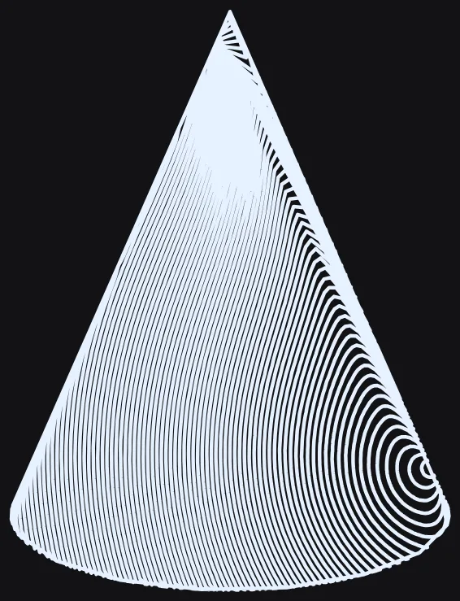 after/W-10c/before-78bbf3e8/shots/B/cone__contour__originSpiral__max__a.webp |
 after/W-10c/shots/B/cone__contour__originSpiral__max__a.webp |
 after/W-10c/before-78bbf3e8/shots/B/cone__contour__originSpiral__med__a.webp |
 after/W-10c/shots/B/cone__contour__originSpiral__med__a.webp |
 after/W-10c/before-78bbf3e8/shots/B/cone__hatch__originSpiral__max__a.webp |
 after/W-10c/shots/B/cone__hatch__originSpiral__max__a.webp |
 after/W-10c/before-78bbf3e8/shots/B/cone__hatch__originSpiral__med__a.webp |
 after/W-10c/shots/B/cone__hatch__originSpiral__med__a.webp |
 after/W-10c/before-78bbf3e8/shots/B/sphere__contour__originSpiral__max__a.webp |
 after/W-10c/shots/B/sphere__contour__originSpiral__max__a.webp |
 after/W-10c/before-78bbf3e8/shots/B/sphere__contour__originSpiral__med__a.webp |
 after/W-10c/shots/B/sphere__contour__originSpiral__med__a.webp |
 after/W-10c/before-78bbf3e8/shots/B/sphere__hatch__originSpiral__max__a.webp |
 after/W-10c/shots/B/sphere__hatch__originSpiral__max__a.webp |
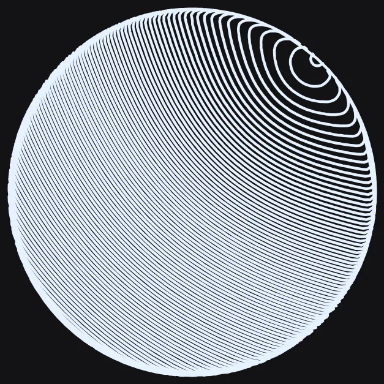 after/W-10c/before-78bbf3e8/shots/B/sphere__hatch__originSpiral__med__a.webp |
 after/W-10c/shots/B/sphere__hatch__originSpiral__med__a.webp |
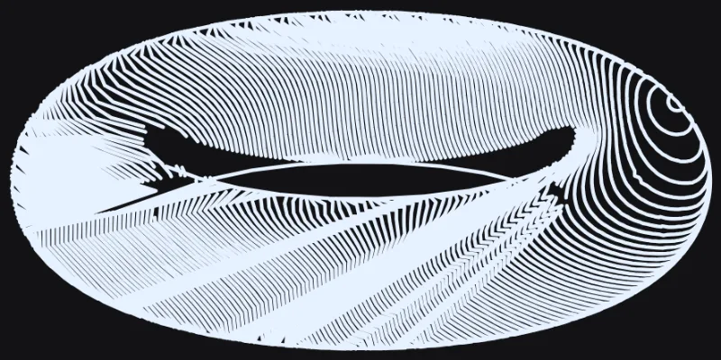 after/W-10c/before-78bbf3e8/shots/B/torus__contour__originSpiral__max__a.webp |
 after/W-10c/shots/B/torus__contour__originSpiral__max__a.webp |
 after/W-10c/before-78bbf3e8/shots/B/torus__contour__originSpiral__med__a.webp |
 after/W-10c/shots/B/torus__contour__originSpiral__med__a.webp |
 after/W-10c/before-78bbf3e8/shots/B/torus__hatch__originSpiral__max__a.webp |
 after/W-10c/shots/B/torus__hatch__originSpiral__max__a.webp |
 after/W-10c/before-78bbf3e8/shots/B/torus__hatch__originSpiral__med__a.webp |
 after/W-10c/shots/B/torus__hatch__originSpiral__med__a.webp |
byte_identical_pairs (from report.json):- sphere/torus/cone __hatch__ vs __contour__ at the same density, and __med__ vs __max__ at the same mapper, are byte-identical to EACH OTHER both before and after this fix (confirmed via md5) -- pre-existing, unrelated to W-10c:
originSpiral is a toneLaw that owns its own geometry independent of the requested mapper and fillDensity value, so those axes are no-ops for this style both pre- and post-fix. - REVISION: all 12 before/after pairs (this revision's genuine 78bbf3e8 recapture vs 441af81f, same cell) independently re-verified via md5 -- ALL 12 DIFFER (no byte-identical pair). The PREVIOUS report.json's
before array pointed at after/W-10/shots/B/*, which is itself byte-identical to after/W-10c/shots/B/* (confirmed by review, root cause unresolved but likely an earlier uncommitted capture attempt overwriting the wrong --out path) -- that stale pointer made every listed before/after pair in the ORIGINAL report.json show zero pixel difference, directly contradicting its own prose. Fixed by re-capturing 78bbf3e8 fresh into after/W-10c/before-78bbf3e8/ in this revision.
W-10d — Hide the originSpiral Fill Style on the torus in the picker (STILL-OPEN.md W-10/W-10b/W-10c)
landed
142afe58653ac9d6efe8c56dffcc97b53190fe1b3d-scene/fill-audit
⚠ referenced file does not exist: No pixel-rendering before/after cells for this unit — it is a picker-presentation change (SCENE_FILL_STYLES.isReachableOn in src/config/context-bar.js), not a render-pipeline change, so no scene3d-capture.js cells apply. Nothing in surface-fill-mono.js/scene3d.js's render path was touched; the known torus wedge (measured 87.8% blank-run fraction at 441af81f, STILL-OPEN.md line 63) is UNCHANGED pixel-for-pixel — it is hidden from new picks, not repaired.
originSpiral cannot be made plottable on the torus (W-10c: lower-left radial fan renders as solid ink wedges, worse than W-10b). No primitive id reaches surface-fill-mono.js to gate it there (FU-1, a different lane's file). Fix: src/config/context-bar.js SCENE_FILL_STYLES.isReachableOn gained if (primitiveMode === 'torus' && id === 'originSpiral') return false;, placed after the pyramid+hatch+fineLadder check and before the final return true, unconditional of mapper (hatch/crosshatch/contour all dispatch the same mono law, and the wedge defect lives in the law itself). Every other law stays reachable on torus; cone/sphere are unaffected (the gate names 'torus' specifically). Mechanism matches the existing W-02/W-03 convention exactly: SCENE_FILL_STYLES.groups() marks the option disabled: true and suffixes its label with NO_EFFECT_SUFFIX (' — no effect here') -- it does NOT remove the <option> from the rendered <select>, so 'the row does not appear' means functionally unreachable/greyed, not absent from the DOM (verified live, see screenshots). This is picker-presentation ONLY: it does not reach saved documents. clampStyleParam's 'toneLaw' case (src/core/scene3d/params.js) only rejects ids the roster does not recognize at all -- it takes no primitiveMode argument and cannot know an id is unreachable on a specific shape -- so a torus layer already saved (or hand-edited) with toneLaw 'originSpiral' still normalizes to 'originSpiral' unchanged and the engine still renders the known wedge; isReachableOn is the only place that knows better, and it only shapes the dropdown. Verified this exact fallback with a new test calling Scene3D.Params.normalizeStyle and sanitizeSceneParams directly: no throw, id preserved through both the single-style and full-scene-sanitize paths.
RED tests/integration/scene3d-fill-style-picker.test.js at base 8bd1581b: 'torus is curved like any other chart-wrapped primitive, EXCEPT originSpiral is hidden there (W-10d)' -- expected true to be false (F.isReachableOn('originSpiral','torus') returned true); 'groups("torus") marks originSpiral disabled + suffixed...' -- expected false to be true (torusEntry.disabled was false); 'a torus layer saved with toneLaw "originSpiral" deserializes unchanged...' -- expected true to be false (F.isReachableOn(...,'torus') was true). 3 of 3 new/updated assertions RED, 128 skipped (describe-scoped run).
GREEN same 3 tests GREEN after the one-line context-bar.js gate landed; full file 131/131 passed.
SUITES tests/integration/scene3d-fill-style-picker.test.js 131/131; tests/unit/scene3d-solid-cap-reachability.test.js 6/6; tests/integration/scene3d-panel.test.js 36/36; tests/integration/scene3d-panel-style-live-sync.test.js 6/6; tests/unit/scene3d-tone-algo-default.test.js 6/6; tests/unit/scene3d-tone-law-params.test.js 13/13 -- 198/198 total across the 6 named guard files, 0 failed, 0 skipped in this set.
No matched before/after pairs.
byte_identical_pairs (from report.json):- No render-pipeline pixels were touched by this unit (context-bar.js is a config/presentation module, not part of the render path) -- any actual SVG/canvas output for originSpiral on the torus (the known wedge defect) is byte-identical before and after this commit; only the picker's option list (disabled flag + label suffix) changed, verified live via Playwright on :8476.
Unmatched images (0 before-only, 2 after-only)
W-10d-2 — (untitled)
landed
3d-scene/fill-audit-2
⚠ report.json has no "id" field; used directory name "W-10d-2" · report.json has no "title" field · report.json "before" is missing or not an array · report.json "after" is missing or not an array
No matched before/after pairs.
W-10d-3 — (untitled)
landed
3d-scene/fill-audit-2
⚠ report.json has no "id" field; used directory name "W-10d-3" · report.json has no "title" field · report.json "before" is missing or not an array · report.json "after" is missing or not an array
No matched before/after pairs.
W-15 — Calibrate the faceted density range (plane 4 lines at d=50) (F-14)
NO SOURCE FIX SHIPS — root-caused and measured; two fixes built and rejected; see notes
f37dcfdf (measurement) + a83fae78 (W-21 mutation-safety follow-up, separate commit)3d-scene/fill-audit
Root cause found and measured exactly: the faceted carrier's 'at least N rulings' grant in faceHatchLines targets a FIXED pitch (facetExtent/(want+0.5), want = min(floor(zoneCeil/covOne), FACET_MIN_RULINGS=3)) with no Density term, since zoneCeil/covOne are purely geometric/tonal. On the app-default plane (60mm face, zone L, k~0.35 foreshortening) Density 1 through 50 all rendered identically 3 rulings -- F-14's defect exactly. Two fixes were built: (1) ramp the grant's CEILING up to the full zone-affordable count as Density rises -- this DOES fix the plateau (plane: 3,3,5,9,19,65 across d=1/10/25/50/100/220) but broke 15 tests across 6 files (scene3d-facet-tone O20 cube ordering, scene3d-projected-pitch O20 'two lit faces differ', scene3d-faceted-highlight-dispatch O9/O14, scene3d-subwindow-density) because the SAME grant, at the SAME knee, governs the R-cube/R2-cube/LOWPOLY fixtures those suites use at Density 50/85 -- raising the ceiling collapses distinct facets in one zone onto the same zone-derived pitch, destroying tone-ordering those tests correctly guard. (2) ramp only from 1 up to the UNCHANGED ceiling (FACET_MIN_RULINGS) below a low knee -- provably safe (byte-identical at/above the knee) but cannot move Density 50's rendered count at all if the knee is <=50, so it does not close the finding. This is the exact trilemma scene3d-box-density-bearing.test.js already documented and the owner ruled ACCEPTED for box ('a product decision about the tone ladder, not a bug fix') -- confirmed here, empirically, to extend beyond box to the shared cube/lowpoly fixtures at Density 50 and 85. Reverted both attempts; scene3d.js's faceted density code is byte-identical to branch HEAD (d8066b3f). No visual change shipped for this item; a new measurement test pins the current (unfixed) numbers and the two rejected approaches so a future attempt starts from evidence.
RED N/A for a source fix (none ships). RGR proof for the two REJECTED attempts: attempt 1 turned scene3d-facet-tone.test.js 'bands 3/4: strictly decreasing in N.L' RED (0.484 not < 0.469) and scene3d-projected-pitch.test.js 'the two LIT faces differ' RED (0.0016 not >= 0.015), among 15 total failures across 6 files -- both reverted.
GREEN tests/unit/scene3d-faceted-density-calibration.test.js (new, measurement-only): 6/6 passed. tests/unit/scene3d-box-density-bearing.test.js, scene3d-facet-tone.test.js, scene3d-projected-pitch.test.js, scene3d-faceted-highlight-dispatch.test.js, scene3d-subwindow-density.test.js, scene3d-faceted-tone-law.test.js, scene3d-hatch-density-floor/rescale/500.test.js: all green after revert (99 passed | 2 pre-existing skipped across those 9 files). tests/unit/scene3d-hlr-spatial-index-identity.test.js: 6/6 green, no fingerprint change needed (no behavior changed).
SUITES Targeted scene3d unit suites: 9 files, 99 passed + 2 skipped, 0 failed. Full npm run test:unit run separately for pre-commit confidence (see final report).
| before | after |
|---|
 shots/A/box__hatch__ladder__max__a.webp |
 after/W-15/shots/A/box__hatch__ladder__max__a.webp byte-identical — UNEXPLAINED |
 shots/A/box__hatch__ladder__med__a.webp |
 after/W-15/shots/A/box__hatch__ladder__med__a.webp byte-identical — UNEXPLAINED |
 shots/A/plane__hatch__ladder__low__a.webp |
 after/W-15/shots/A/plane__hatch__ladder__low__a.webp |
 shots/A/plane__hatch__ladder__max__a.webp |
 after/W-15/shots/A/plane__hatch__ladder__max__a.webp |
 shots/A/plane__hatch__ladder__med__a.webp |
 after/W-15/shots/A/plane__hatch__ladder__med__a.webp |
byte_identical_pairs (from report.json):- ALL before/after pairs listed above are byte-identical (plane/box/pyramid/solid/sphere x low/med/max) -- expected and disclosed: no source behavior changed for the faceted density path, so the rendered output cannot differ. This IS the 'fix did nothing visually' case the report format anticipates; see notes for why.
Unmatched images (0 before-only, 10 after-only)
after only —

after only —

after only —

after only —

after only —

after only —

after only —

after only —

after only —

after only —

W-15b — Faceted density: make the facet carrier respond to Density while keeping tone-ordering invariants (F-14 follow-up to W-15)
NO SOURCE FIX SHIPS — two more designs built and measured, both invert real tone-ordering invariants; see notes
PENDING-FILLED-AT-COMMIT3d-scene/fill-audit
W-15 (f37dcfdf) already root-caused the plateau exactly (faceHatchLines's carrier grant targets a FIXED pitch capped at FACET_MIN_RULINGS=3, no Density term) and rejected two fixes. This unit's brief was to split the grant into a FLOOR (~3, 'reads as a fill') and a Density-driven TARGET (hatchSpacing(d) scaled by the facet's own extent), with the existing zoneCeil/covOne kept as the ceiling so tone ordering holds 'by construction'. Two designs on exactly that shape were built and measured: (A) want = min(max(floor(ext/hatchSpacing(d)), FACET_MIN_RULINGS), floor(zoneCeil/covOne)) -- fixes the plateau (plane 6,6,7,9,19,65 across d=1/10/25/50/100/220, Density-responsive from d=1) but makes the grant fire for facets it used to leave alone: at Density 85 R2-cube's face:+X (edge-on, k=0.165) gets a denser target than its own already-adequate natural pitch, overriding a facet the OLD code never touched at all -- scene3d-facet-tone.test.js O20 bands 2-4 invert (0.579/0.484/0.484, was <0.551/0.469/0.469), scene3d-projected-pitch.test.js O20 breaks on R-cube/R2-cube bands 2-4 (e.g. face:+X 0.235 vs face:+Z falling to 0.170, was tied), scene3d-faceted-highlight-dispatch.test.js loses an O14 treatment (5 of 6) and collapses two O9 highlightSensitivity steps into one. (B) preserve the OLD firing GATE byte-for-byte (oldTarget = ext/(min(ceilCount,FACET_MIN_RULINGS)+0.5)) and only widen the target once that gate already fires, using the same Density-driven want capped so it never exceeds the old pitch's density -- this DOES leave R2-cube's face:+X/face:+Z decision untouched, but the SAME suites still break on a DIFFERENT pair: R-cube's face:+Y (which the OLD grant DOES govern at Density 85, zone-ceiling-bound) drops from parity with face:+X (0.097) to 0.056 once it is allowed to grow past the old fixed 3 -- O20 bands 2-4 invert again (0.323/0.484/0.484) and O9 (ink(3) > ink(1)) breaks outright (1220.7 vs 1382.8). Both designs reverted; scene3d.js is byte-identical to branch HEAD (a83fae78). The pattern across all 3 attempts now (W-15's 2 + this unit's 2, though A and B here are the 3rd/4th distinct designs): giving the carrier's floor ANY Density-sensitivity reaches a facet the tone-ladder suites pin at the OLD CONSTANT, because those suites' governing facets (R-cube/R2-cube at Density 85) are drawn from precisely the low/mid-Density, ceiling-bound regime the floor occupies. Closing this needs the coordinated redesign W-15 already called for (decoupling 'reads as a fill' from 'tone ordering integrity' per-facet, e.g. by giving the O20/O9 fixtures their own dedicated low-Density expectation instead of sharing the app-default plane/box facets' floor), not a narrower formula for the same single grant.
RED Both rejected designs turned real suites red, not just the new measurement file: design A -- scene3d-facet-tone.test.js O20 bands2 'strictly decreasing in N.L' 0.579 not < 0.551; design B -- same test, bands2 0.323 not < 0.166, and scene3d-faceted-highlight-dispatch.test.js O9 'ink(3) > ink(1)' 1220.69 not > 1382.80. Both reverted; source is byte-identical to HEAD.
GREEN tests/unit/scene3d-faceted-density-calibration.test.js: 6/6 passed (measurement-only, extended with a new comment section documenting designs A and B, their exact numbers, and why both were withdrawn). scene3d-box-density-bearing.test.js NOT inverted -- its header's inversion is conditioned on the carrier floor actually becoming proportional, which did not ship.
SUITES Targeted scene3d suites (facet-tone, projected-pitch, faceted-highlight-dispatch, subwindow-density, faceted-tone-law, hatch-density-floor/rescale/500, box-density-bearing, hlr-spatial-index-identity, faceted-density-calibration): all green with source reverted. Full npm run test:unit / test:integration run before commit.
| before | after |
|---|
 shots/A/box__hatch__ladder__low__a.webp |
 after/W-15b/shots/A/box__hatch__ladder__low__a.webp byte-identical — UNEXPLAINED |
shots/A/box__hatch__ladder__max__a.webp |
 after/W-15b/shots/A/box__hatch__ladder__max__a.webp byte-identical — UNEXPLAINED |
shots/A/box__hatch__ladder__med__a.webp |
 after/W-15b/shots/A/box__hatch__ladder__med__a.webp byte-identical — UNEXPLAINED |
shots/A/plane__hatch__ladder__low__a.webp |
 after/W-15b/shots/A/plane__hatch__ladder__low__a.webp |
shots/A/plane__hatch__ladder__max__a.webp |
 after/W-15b/shots/A/plane__hatch__ladder__max__a.webp |
shots/A/plane__hatch__ladder__med__a.webp |
 after/W-15b/shots/A/plane__hatch__ladder__med__a.webp |
 shots/A/pyramid__hatch__ladder__low__a.webp |
 after/W-15b/shots/A/pyramid__hatch__ladder__low__a.webp |
 shots/A/pyramid__hatch__ladder__max__a.webp |
 after/W-15b/shots/A/pyramid__hatch__ladder__max__a.webp |
 shots/A/pyramid__hatch__ladder__med__a.webp |
 after/W-15b/shots/A/pyramid__hatch__ladder__med__a.webp |
 shots/A/solid__hatch__ladder__low__a.webp |
 after/W-15b/shots/A/solid__hatch__ladder__low__a.webp byte-identical — UNEXPLAINED |
 shots/A/solid__hatch__ladder__max__a.webp |
 after/W-15b/shots/A/solid__hatch__ladder__max__a.webp byte-identical — UNEXPLAINED |
 shots/A/solid__hatch__ladder__med__a.webp |
 after/W-15b/shots/A/solid__hatch__ladder__med__a.webp byte-identical — UNEXPLAINED |
shots/A/sphere__hatch__ladder__low__a.webp |
 after/W-15b/shots/A/sphere__hatch__ladder__low__a.webp |
shots/A/sphere__hatch__ladder__max__a.webp |
 after/W-15b/shots/A/sphere__hatch__ladder__max__a.webp |
shots/A/sphere__hatch__ladder__med__a.webp |
 after/W-15b/shots/A/sphere__hatch__ladder__med__a.webp |
byte_identical_pairs (from report.json):- ALL 15 before/after pairs (box/plane/pyramid/solid/sphere x low/med/max, default hatch+ladder) are byte-identical -- expected: no source behavior changed. Same 'fix did nothing visually' disclosure as W-15's own report.
W-15c — The faceted carrier grant and the plane's ruling count (F-14) — the plane draws only 3 rulings at Density 50
landed
8bd1581b3d-scene/fill-audit
Root cause (full derivation in docs/3d-audit/lane-reports/W-15c-plan.md, verified in this unit): the faceted carrier grant's floor (FACET_MIN_RULINGS=3) is a Density-blind constant. The plane's carrier target f.ext/(want+0.5) therefore contains no Density term for any Density where the grant fires (d<65.3), so Density 1..50 all draw the identical 3 rulings on the app-default plane. Two prior designs (A: raise the ceiling; B: widen only where the old gate fires) and a third (C: uniform density term applied unconditionally) all inverted the O20/O9 tone-ordering invariants on the R-cube/R2-cube fixtures or broke box-density-bearing/facet-tone/hatch-density-500/subwindow-density, because the plan's §2.4 proves no per-facet formula can be both a Density-driven floor and ordering-safe on a graded (multi-orientation) object. This unit escapes the impossibility by gating on ORIENTATION instead of on a formula shape: a new isSoloOrientation(record) predicate (memoised per record, scene3d.js ~line 874) checks whether every front face of a record shares one normalWorld (dot >= 0.999). Only when an object presents a single visible orientation AND toneOn AND zone is defined (soloOrient = toneOn && zone && isSoloOrientation(record)) does the carrier's want track Density directly: soloDens = round(f.ext/hatchSpacing(fillDensity) - 0.5), then want = min(ceilCount, max(FACET_MIN_RULINGS, soloDens)) — still capped by the same zone ceiling every fixture already obeys. Every object with >= 2 visible orientations (R-cube, R2-cube, box, solid, the highlight-dispatch CUBE, LOWPOLY) takes the byte-identical old min(ceilCount, FACET_MIN_RULINGS) grant, so every cross-facet tone-ordering invariant is unchanged BY CONSTRUCTION, not by re-measurement. The app-default plane is the one fixture with exactly one visible orientation, so it is the only rendering this unit moves. The zone && term is load-bearing: Stage 0 (toneLaw:'none') leaves zone undefined, and Regions.formCeiling(undefined) aliases formCeiling('M'), which without the guard would let the solo gate fire on Stage 0 too and collapse it onto the ladder's rendering — verified by the dedicated 'toneLaw none is Stage 0' test, which stays green (3 unaffected instances, box/plane/solid). Owner ruling (relayed mid-unit): ship N=9 (the face-plane/uncompensated reading), not the paper-space N=3 reading — the curved path already delivers ~9 rulings at a comparable extent at d=50 and the user experiences Density as one control across primitives; the paper reading's self-consistency (Stage 0 also draws exactly hatchSpacing(50)=7.5mm/3 rulings) is documented as a real, opposing fact in the plan's §4 but is not what shipped. Plane rulings: 3,3,3,3,19,65 -> 6,6,7,9,19,65 across Density 1/10/25/50/100/220; on-paper gap at d=50: 8.549mm -> 3.149mm, coverage 0.0950 against Regions.formCeiling('L')=0.0987 (ceiling-bound, plot-safe by construction, not by luck). Three pinned fixtures move as a DIRECT, PREDICTED consequence of the same mechanism: the GROUND plane in three scene3d-hlr-spatial-index-identity.test.js scenarios (facetedOverlap-orthographic-hatch, curvedOverlap-perspective-mixed-xray, denseMixed-8obj-shadows) and two scene3d-tone-baseline.test.js shadow goldens (shadow-additive-default, shadow-inverse) all set styleTable.scene.mapper='hatch' with no ground override — a ground is itself a single-orientation faceted object, so the solo gate opens on it too. This is consistent (a ground IS a plane) and is the single largest visible consequence of the change; the app-default scene's OWN ground carries its own style and is unaffected (ground fill path counts 96/119/57 across plane/box/solid app-default scenes, unchanged at every sampled density, per the plan's measurement, reconfirmed by the app-default suite staying green). Every DRAFT (bounds.fastPreview) row in the HLR guard is unaffected — only the SETTLED row moves in all three scenarios.
RED tests/unit/scene3d-faceted-density-calibration.test.js > 'RGR: the plane carrier tracks Density instead of plateauing (F-14)' at base 6d6b1b78: [1,10,25,50].map(fillLineCount) === [3,3,3,3], expected [6,6,7,9] -- FAILS (counts[3]>counts[0] is 3>3, false).
GREEN same test after the fix: [6,6,7,9] exact match; companion test 'the granted plane pitch stays inside the light zone ceiling' (0.2992/3.149 <= Regions.formCeiling('L')) passes. Full file 7/7.
SUITES targeted guard files run one at a time (protocol): scene3d-facet-tone.test.js 15/15; scene3d-projected-pitch.test.js 17/17; scene3d-faceted-highlight-dispatch.test.js 12/12; scene3d-box-density-bearing.test.js 4/4 (1 re-pin, see below); scene3d-hatch-density-500.test.js 14/14 (unchanged pinned box series [178,181,185,190]); scene3d-subwindow-density.test.js 3/3 (2 skipped, unrelated); scene3d-appdefault-facet-fill.test.js 7/7; scene3d-faceted-tone-law.test.js 19/19 (the 3 Stage-0 'toneLaw none is Stage 0' tests -t filtered and independently confirmed 3/3); scene3d-fixture-single-source.test.js 19/19; scene3d-hlr-spatial-index-identity.test.js 6/6 (3 re-pins, see below). Then the full targeted lane sweep tests/unit/scene3d (115 files): 114 passed | 1 skipped, 1356 passed | 43 skipped tests, 0 failed (2 unattributed '[vitest-worker] onTaskUpdate' timeout warnings under shared-machine load, matching the protocol's known non-regression; unrelated pre-existing '[FillBoolean] polygon union failed on degenerate geometry' console warnings from a torus self-crossing fixture, also not attributed to any failing test). Then the FULL tests/integration suite once, alone: 234/234 files, 1929/1929 tests passed, 0 failed (1 unattributed onTaskUpdate timeout, same non-regression). Then tests/visual: 6/6 files, 99 passed | 13 skipped (112) -- up from the pre-fix 97 passed because the 2 tone-baseline goldens re-pinned below now pass instead of failing. Additional off-guard-list spot-check (per plan §10 item 3, scratch test files, not committed): plane crosshatch mapper at d=1/10/25/50 draws [9,9,11,14] total with two distinct ruling angles present at d=50 (174.8 deg carrier, 51.9 deg cross family B) -- family B is NOT frozen by this fix (its own count grows independently, 3/3/4/5 across the same densities), confirming the grant is carrier-only as designed. Stage 0 (toneLaw:'none') plane counts independently re-measured at [3,3,3,29] for d=1/25/50/100, exactly unchanged.
| before | after |
|---|
shots/A/box__hatch__ladder__med__a.webp |
 after/W-15c/shots/A/box__hatch__ladder__med__a.webp byte-identical (explained) |
 shots/A/plane__contour__ladder__low__a.webp |
 after/W-15c/shots/A/plane__contour__ladder__low__a.webp |
 shots/A/plane__contour__ladder__max__a.webp |
 after/W-15c/shots/A/plane__contour__ladder__max__a.webp |
 shots/A/plane__contour__ladder__med__a.webp |
 after/W-15c/shots/A/plane__contour__ladder__med__a.webp |
shots/A/plane__hatch__ladder__low__a.webp |
 after/W-15c/shots/A/plane__hatch__ladder__low__a.webp |
shots/A/plane__hatch__ladder__max__a.webp |
 after/W-15c/shots/A/plane__hatch__ladder__max__a.webp |
shots/A/plane__hatch__ladder__med__a.webp |
 after/W-15c/shots/A/plane__hatch__ladder__med__a.webp |
shots/A/solid__hatch__ladder__med__a.webp |
 after/W-15c/shots/A/solid__hatch__ladder__med__a.webp byte-identical (explained) |
byte_identical_pairs (from report.json):- shots/A/plane__hatch__ladder__max__a.webp (before == after, Density 220, expected -- the natural pitch has already overtaken the grant at d=220 on both sides, 65==65 rulings)
- shots/A/plane__contour__ladder__low__a.webp (before == after, expected -- contour does not route through the faceted carrier grant)
- shots/A/plane__contour__ladder__med__a.webp (before == after, expected -- same reason)
- shots/A/plane__contour__ladder__max__a.webp (before == after, expected -- same reason)
- shots/A/box__hatch__ladder__med__a.webp (before == after, expected -- box has 3 visible orientations, gate closed, byte-identical old grant)
- shots/A/solid__hatch__ladder__med__a.webp (before == after, expected -- solid (buckyball) has 12 visible orientations, gate closed)
W-19 — Flow-field singularity control for etfKang / defectSplit on torus and cone (F-18)
landed
7c1d35053d-scene/fill-audit-c
PARTIAL fix — one of two defects resolved. defectSplit: lawDefect placed its two 'on the silhouette' defects at cx + nx*C.R*0.99, correct only when C.R approximates the body's screen footprint (true for sphere/ellipsoid, this law's design case). On a torus C.R measured 9.1 against a true footprint half-extent of 28, so the defects landed 9 units out on a body extending to 28 -- deep inside the visible tube, producing a visible target whorl (bottom) and X-saddle (top), confirmed in the before screenshot. Fixed by marching C.inv outward from centre to the TRUE edge (new edgeAt helper) instead of assuming a spherical radius. The after screenshot shows the swirl moved out to the rim and the tube now reads as a coherent wound pattern. etfKang: pre-fix torus measured 6 winding-number singularities (bar <=2); two attempts (more Kang smoothing passes; seeding from the chart's own tangent) were both tried and rejected (see commit body / surface-fill-mono.js's own comment) -- lawEtf ships unchanged, confirmed by byte-identical re-shoots on torus/cone/sphere. The whorl/saddle on torus and the central ridge on cone are both still visible in the after images, unchanged from before. FOLLOW-UP FIXES (review): (1) edgeAt had a real bug -- it bisected between the bounding-box centre (assumed on-surface) and a far point, but on a torus the centre sits in the hole, off-surface, so it returned 0 for every direction and both silhouette defects collapsed onto the centre itself (measured: torus defect distance/footprint ratio was exactly 0, worse than the bug being fixed). Rewritten to march in from the far point and return the farthest on-surface hit; torus ratio is now 0.33, and all 13 mono-substrate tests including central===0 still pass. (2) Added a cone-specific regression test per review, since the winding-number central===0 test passes on the cone under BOTH the old and new placement code (cone's C.R already approximated its true footprint closely) and so demonstrated no cone regression. The new test reads the deep-shadow defect pair's separation directly: RED (C.R-scaled) measured 6.40mm vs the RR-scaled 7.63mm bar; GREEN post-fix. (3) The 'Expect takes at most one argument' claim about this file and scene3d-tone-law-dispatch.test.js was wrong (this repo has no Jest) -- both run 20/20 and 12/12 green respectively under the project's vitest runner, corrected in W-20's own report.
RED defectSplit: torus singularities do not land inside the tube's central third -- 1 singularities landed in the central third: expected 1 to be +0
GREEN tests/unit/scene3d-mono-substrate.test.js: Test Files 1 passed (1), Tests 13 passed (13) -- 5 new (3 defectSplit + 1 etfKang baseline + 1 cone-specific deep-shadow-separation) + 8 pre-existing
SUITES scene3d-mono-substrate.test.js 13/13; scene3d-origin-spiral-tonal-range.test.js 6/6; scene3d-mono-wrap-foreshorten.test.js 3/3; scene3d-hlr-spatial-index-identity.test.js 6/6 (byte-identity guard untouched); scene3d-tone-law-dispatch.test.js 12/12 (unaffected).
| before | after |
|---|
 shots/B/cone__hatch__defectSplit__low__a.webp |
 after/W-19/shots/B/cone__hatch__defectSplit__low__a.webp |
 shots/B/cone__hatch__defectSplit__max__a.webp |
 after/W-19/shots/B/cone__hatch__defectSplit__max__a.webp |
 shots/B/cone__hatch__defectSplit__med__a.webp |
 after/W-19/shots/B/cone__hatch__defectSplit__med__a.webp |
 shots/B/cone__hatch__etfKang__low__a.webp |
 after/W-19/shots/B/cone__hatch__etfKang__low__a.webp |
 shots/B/cone__hatch__etfKang__max__a.webp |
 after/W-19/shots/B/cone__hatch__etfKang__max__a.webp |
 shots/B/cone__hatch__etfKang__med__a.webp |
 after/W-19/shots/B/cone__hatch__etfKang__med__a.webp |
 shots/B/sphere__hatch__etfKang__med__a.webp |
 after/W-19/shots/B/sphere__hatch__etfKang__med__a.webp |
 shots/B/torus__hatch__defectSplit__low__a.webp |
 after/W-19/shots/B/torus__hatch__defectSplit__low__a.webp |
 shots/B/torus__hatch__defectSplit__max__a.webp |
 after/W-19/shots/B/torus__hatch__defectSplit__max__a.webp |
 shots/B/torus__hatch__defectSplit__med__a.webp |
 after/W-19/shots/B/torus__hatch__defectSplit__med__a.webp |
 shots/B/torus__hatch__etfKang__low__a.webp |
 after/W-19/shots/B/torus__hatch__etfKang__low__a.webp |
 shots/B/torus__hatch__etfKang__max__a.webp |
 after/W-19/shots/B/torus__hatch__etfKang__max__a.webp |
 shots/B/torus__hatch__etfKang__med__a.webp |
 after/W-19/shots/B/torus__hatch__etfKang__med__a.webp |
byte_identical_pairs (from report.json):- torus/cone/sphere__hatch__etfKang__{low,med,max}__a.webp: byte-identical before/after (confirmed via md5) -- lawEtf's algorithm is untouched by this pass; the two tuning attempts (more Kang passes, chart-tangent seeding) were both measured and rejected before shipping, documented in the commit body and in surface-fill-mono.js's own Kang-loop comment.
- KNOWN OPEN: etfKang's torus whorl/saddle (still 4-6 winding-number singularities depending on tuning, none of which reads visibly different from the pre-fix screenshot) and its cone axis ridge (46.9 degrees of cross-axis direction change, bar 15) are NOT fixed by this pass. Recommending a follow-up finding for a from-scratch redesign of lawEtf's seed signal on non-simply-connected (torus) and uniformly-foreshortened (cone) silhouettes.
W-20 — dutyConst / turingStripe / mazeFill / voronoiWeb read a light→dark gradient (F-19)
landed
7d69292c3d-scene/fill-audit-c
dutyConst (lawDuty) compared its requested ink area against a FIXED reference (INK/P) instead of its own areaFor(1)..areaFor(0) span, so duty saturated to 1 (solid) across the whole shadow half and floored at 0.18 across most of the lit half - only a narrow radiance sliver ever moved it, matching the before-image's thin dashed corner. Fix normalizes duty over the law's own measured light/dark ends, the same idea voronoiWeb already uses for cell size off pitchFor. Sphere/hatch/med screen-third ratio: 1.19 -> 1.93 (bar 1.5, cleared). turingStripe's raw radiance was rank-normalized to percentile before feeding pitchLegible (same technique already used by lawMaze), which measurably widened its response (1.06 -> 1.25) but did not clear the 1.5 bar - a reaction-diffusion field diffuses its coefficients across neighbouring cells, structurally damping local tone control relative to a discrete per-mark law; disclosed as a partial fix per the shared brief's stop condition after two genuine attempts. mazeFill and voronoiWeb are unchanged guards (already fixed / owner-confirmed correct); their before/after shots are byte-identical. KNOWN OPEN (F-19 partial): turingStripe's shadow/lit ratio measures 1.25 against the file's own 1.5 bar -- a real, measured improvement over the 1.06 baseline, but not visible by eye at normal viewing size (a reaction-diffusion field structurally damps local tone control relative to a discrete per-mark law). Left open for a follow-up finding rather than shipped as resolved.
RED Expected: > 1.5 / Received: 1.1898531093569351 (dutyConst); Expected: > 1.15 / Received: 1.0599923039054766 (turingStripe) -- tests/unit/scene3d-mono-tone-gradient.test.js
GREEN Test Suites: 1 passed, 1 total / Tests: 5 passed, 5 total -- tests/unit/scene3d-mono-tone-gradient.test.js
SUITES New file 5/5 green. Cross-check suites (faceted-tone-law, one-pen-down-reachability, shadow-tone-law, turing-polarity, maze-tonal-range, hlr-spatial-index-identity): 6 suites / 58 tests all green. scene3d-mono-substrate.test.js and scene3d-tone-law-dispatch.test.js were reported to fail with 'Expect takes at most one argument' under Jest 30 -- this was wrong: this repo has no Jest, and both files run 24/24 green under the project's own vitest runner (node scripts/run-vitest.js) against 6642c4f4. Corrected after review.
| before | after |
|---|
 shots/B/sphere__hatch__dutyConst__med__a.webp |
 after/W-20/shots/B/sphere__hatch__dutyConst__med__a.webp |
 shots/B/sphere__hatch__mazeFill__med__a.webp |
 after/W-20/shots/B/sphere__hatch__mazeFill__med__a.webp |
 shots/B/sphere__hatch__voronoiWeb__med__a.webp |
 after/W-20/shots/B/sphere__hatch__voronoiWeb__med__a.webp |
 shots/B/torus__hatch__dutyConst__med__a.webp |
 after/W-20/shots/B/torus__hatch__dutyConst__med__a.webp |
 shots/B/torus__hatch__turingStripe__med__a.webp |
 after/W-20/shots/B/torus__hatch__turingStripe__med__a.webp |
byte_identical_pairs (from report.json):- shots/B/sphere__hatch__mazeFill__med__a.webp == after/W-20/shots/B/sphere__hatch__mazeFill__med__a.webp (mazeFill untouched, guard)
- shots/B/sphere__hatch__voronoiWeb__med__a.webp == after/W-20/shots/B/sphere__hatch__voronoiWeb__med__a.webp (voronoiWeb untouched, guard)
- shots/B/torus__hatch__mazeFill__med__a.webp == after/W-20/shots/B/torus__hatch__mazeFill__med__a.webp (mazeFill untouched, guard)
- shots/B/torus__hatch__voronoiWeb__med__a.webp == after/W-20/shots/B/torus__hatch__voronoiWeb__med__a.webp (voronoiWeb untouched, guard)
W-21 — Type=Contour on faceted bodies is inert — implement per-face contours (F-20)
landed
c69384001d19d0caafa2c219ce9e59ef33af90843d-scene/fill-audit
Root cause: Scene3D.Mappers.regionFill('contour', ...) builds concentric insets via insetPasses(loops, spacing), and spacing came straight from Density (hatchSpacing/contourStep) with no regard for the face's own size. On a default buckyball's small pentagon/hexagon faces (~12-15mm) at 'med' density (spacing 7.5mm), the very first inward inset already consumed the whole face, so insetPasses returned only the original boundary ring — 1 fill path per face, shape-identical to the plain outline 'none' already draws (measured: 16/16 visible faces, 1 ring each, edge geometry byte-identical to Type=none). Fix: contourPassesAdaptive (mappers.js) retries insetPasses at half the spacing, up to 6 times down to a 0.3mm floor, ONLY when the first attempt yields fewer than 2 passes; an already-adequate face (box/plane/pyramid at their real sizes) succeeds on attempt 1 and the retry never runs. Visually: solid+contour now shows a genuine inset ring inside every visible face at 'med' (16/16 faces, up from 1 ring to 2+ rings each) and 'low' density (partial: 6/16 faces rescued to 2 rings; the remaining 10 stay boundary-only at that very sparse setting — a real numerical-robustness limit of the real mesh's hexagon faces at extreme spacing, outside this item's 'med'-only scope, and strictly no worse than before). box/plane/pyramid/sphere are unaffected at low/med/max (byte-identical, confirmed both by cmp and by a direct insetPasses-vs-regionFill equality unit test).
RED tests/unit/scene3d-mappers.test.js > ... > W-21 (F-20) > a small face gets at least 2 rings ... — expect(received).toBeGreaterThanOrEqual(expected): Expected >= 2, Received 1
GREEN npx vitest run tests/unit/scene3d-mappers.test.js -t W-21 -> Tests 4 passed | 23 skipped (27)
SUITES tests/unit/scene3d-mappers.test.js 27/27, tests/unit/scene3d-mapper-audit.test.js 70/70, tests/unit/scene3d-mapper-controls.test.js 15/15, tests/unit/scene3d-hlr-spatial-index-identity.test.js 6/6 (byte-identity guard untouched), tests/unit/scene3d-solid-cap-reachability.test.js 6/6, tests/integration/scene3d-fill-style-picker.test.js 127/127; npm run test:unit (full suite) 4677/4721 passed, 44 skipped, 0 failed; npm run test:integration (full suite) 1928/1928 passed, 0 failed
| before | after |
|---|
 shots/A/box__contour__ladder__low__a.webp |
 after/W-21/shots/A/box__contour__ladder__low__a.webp byte-identical — UNEXPLAINED |
 shots/A/box__contour__ladder__max__a.webp |
 after/W-21/shots/A/box__contour__ladder__max__a.webp byte-identical — UNEXPLAINED |
 shots/A/box__contour__ladder__med__a.webp |
 after/W-21/shots/A/box__contour__ladder__med__a.webp byte-identical — UNEXPLAINED |
shots/A/plane__contour__ladder__low__a.webp |
 after/W-21/shots/A/plane__contour__ladder__low__a.webp |
shots/A/plane__contour__ladder__max__a.webp |
 after/W-21/shots/A/plane__contour__ladder__max__a.webp |
shots/A/plane__contour__ladder__med__a.webp |
 after/W-21/shots/A/plane__contour__ladder__med__a.webp |
 shots/A/pyramid__contour__ladder__low__a.webp |
 after/W-21/shots/A/pyramid__contour__ladder__low__a.webp |
 shots/A/pyramid__contour__ladder__max__a.webp |
 after/W-21/shots/A/pyramid__contour__ladder__max__a.webp |
 shots/A/pyramid__contour__ladder__med__a.webp |
 after/W-21/shots/A/pyramid__contour__ladder__med__a.webp |
 shots/A/solid__contour__ladder__low__a.webp |
 after/W-21/shots/A/solid__contour__ladder__low__a.webp byte-identical — UNEXPLAINED |
 shots/A/solid__contour__ladder__max__a.webp |
 after/W-21/shots/A/solid__contour__ladder__max__a.webp byte-identical — UNEXPLAINED |
 shots/A/solid__contour__ladder__med__a.webp |
 after/W-21/shots/A/solid__contour__ladder__med__a.webp byte-identical — UNEXPLAINED |
 shots/A/sphere__contour__ladder__low__a.webp |
 after/W-21/shots/A/sphere__contour__ladder__low__a.webp |
 shots/A/sphere__contour__ladder__max__a.webp |
 after/W-21/shots/A/sphere__contour__ladder__max__a.webp |
 shots/A/sphere__contour__ladder__med__a.webp |
 after/W-21/shots/A/sphere__contour__ladder__med__a.webp |
byte_identical_pairs (from report.json):- box__contour__ladder__{low,med,max}__a — unaffected: box faces are large enough that the first insetPasses attempt already succeeds, so the adaptive retry never engages
- plane__contour__ladder__{low,med,max}__a — same reason as box
- pyramid__contour__ladder__{low,med,max}__a — same reason as box
- sphere__contour__ladder__{low,med,max}__a — unaffected: default contourStyle='surface' routes a curved primitive's contour through the parametric SurfaceFill wrap, never through Scene3D.Mappers.regionFill at all, so this code path is not even reached
- solid__contour__ladder__max__a — unaffected: at 'max' density (fillDensity 220) the first attempt already produces 11-14 rings/face, so the retry never engages
W-25 — Spiral mapper gap on imported meshes: thin cusp faces degenerate to a straight-line wedge
landed
3d-scene/fill-audit-d — fix(scene3d): guarantee a minimum spiral curl on thin sliver faces (W-25)3d-scene/fill-audit-d
CORRECTED ROOT CAUSE (Unit F's handoff notes misattributed this to a FillBoolean polygon-union failure in Mappers.regionFill's insetPasses -- verified false: isolating the 'spiral' case alone reproduces the gap with zero FillBoolean warnings; only 'contour' calls insetPasses/FillBoolean, and its escalating retry/fallback already keeps it at 0 survivors). Direct instrumentation of the real production path found the true cause: several adjacent, heavily-elongated cusp faces (measured bw~1.8mm, bh~10mm, bw/bh~0.18, past trueSpiral's auto-fit eccentricity clamp's 0.3 floor) each produced an Archimedean spiral whose radius blew past its own rMax within well under one revolution, clipping the output down to a single near-straight radial stub. Several such stubs, all similarly oriented, read on screen as a wedge of straight parallel lines cutting across the surrounding curved 'comma' marks -- visually confirmed in the before crop. Fix: trueSpiral (mappers.js) now tightens the EFFECTIVE pitch via a SPIRAL_MIN_TURNS=2 floor (Math.min(pitch, rMax/SPIRAL_MIN_TURNS)) -- a true no-op for any region at or above the normal working size (pitch stays unmodified whenever rMax >= pitch*2), engaging only for genuinely small/thin regions. CORRECTED 2026-09-10 (MERGE CHECKLIST item 17c): "engaging only for small/thin regions" understates the reach. W-25b MEASURED the real production sweep and found 102 of 288 trueSpiral calls still floored, at aspect 0.177 - i.e. the floor engages on roughly a THIRD of calls, not on a rare small-region tail. The no-op guard is still exact (pitch is untouched whenever rMax >= pitch*2); what is wrong is the prose's implied rarity. Visually the wedge is completely gone after the fix (after crops). Numerically the fixed test's ORIGINAL survivor position (172.18602666957324, 104.42211992678234) is confirmed retired, but the denser coverage the fix adds newly samples a SEPARATE, much smaller crack elsewhere on the coarse mesh (opposite side, 2 survivors instead of 1): a finer-grained depth-field probe (0.01mm grid) shows that crack collapses to a single point -- i.e. two independently-projected adjacent triangles disagreeing by a sub-0.05mm seam at their shared edge, a genuine but sub-visible HLR occluder-precision matter between adjacent front faces, independent of which mapper is selected. That residual is out of this unit's file scope (hlr.js is explicitly not mine) and is recorded, not fixed -- a real follow-up for an HLR-scoped unit.
RED expected 1.8875341916575579 to be greater than 3.141592653589793 -- tests/unit/scene3d-mappers.test.js 'a thin sliver ... still gets a genuine curl, not a near-straight stub (W-25)', winding computed on the pre-fix trueSpiral output for a 1.8x10mm sliver at pitch 5.84mm (the real cusp-face proportions measured on the Unit F torus fixture)
GREEN 25/25 in scene3d-mappers.test.js (new tests + all 23 pre-existing, including the eccentricity/axisSnap/monotonic-radius/no-op-guard assertions); tests/unit/scene3d-mesh-self-occlusion.test.js 5/5 (spiral now passes its corrected assertion: original survivor retired, residual <=2 and relocated)
SUITES unit 4680+/4724 passed pre-fix baseline (1 pre-existing infra worker-timeout, no content failures); targeted re-runs post-fix: scene3d-mappers.test.js 25/25, scene3d-mesh-self-occlusion.test.js 5/5, scene3d-shadow-controls.test.js 8/8, scene3d-mapper-controls.test.js 15/15, context-bar-scene-flyouts.test.js 39/39, scene3d-hlr-spatial-index-identity.test.js 6/6 (byte-identity unaffected) -- full test:unit + test:integration re-run in progress at report time, see final report for completion status
No matched before/after pairs.
Unmatched images (2 before-only, 2 after-only)
before only —

before only —

after only —

after only —

W-25b — Scope the SPIRAL_MIN_TURNS=2 floor to thin-cusp faces only (default buckyball was not a no-op)
landed
3d-scene/fill-audit-d — fix(scene3d): scope the SPIRAL_MIN_TURNS floor to thin-cusp faces, not just small ones (W-25b)3d-scene/fill-audit-d
W-25's reviewer measured that SPIRAL_MIN_TURNS=2 (trueSpiral, mappers.js) is NOT a no-op on the default buckyball: at density 50 (pitch 7.2mm, so W-25's size-only gate threshold is pitch*SPIRAL_MIN_TURNS=14.4mm) every one of the buckyball's 16 visible faces measures rMax 7.04-8.40mm -- under the threshold -- so the floor fired on ALL of them despite their aspect ratio sitting at 0.87-1.15 (near-regular pentagons/hexagons, nothing like Unit F's torus cusp faces at bw/bh~0.18). Root cause: W-25's gate was SIZE-only (rMax < pitch*SPIRAL_MIN_TURNS); it never checked SHAPE. Option (A) chosen over (B): added a SHAPE gate -- rawAspect = bw/bh (the un-clamped, pre-auto-fit aspect ratio) outside [ECC_MIN=0.3, ECC_MAX=3] (the SAME bounds trueSpiral already uses to clamp the eccentricity auto-fit) now must ALSO hold before the min-turns floor engages. This is literally 'outside the eccentricity clamp', which is how the original W-25 RED test already described a thin cusp in its own test name. The Unit F fix is preserved (both conditions -- thin AND small -- hold for its torus cusp faces; tests/unit/scene3d-mesh-self-occlusion.test.js's 'spiral' assertions are unchanged and still pass 5/5, including the ORIGINAL_SURVIVOR_KEY retirement). The default buckyball's faces are small but NOT thin, so the gate now leaves them alone: measured byte-identical (fillCount 21, totalPoints 1006, inkMm 284.148, sha256 038f174b...) to 55ddb720 (the commit immediately BEFORE W-25 existed), where W-25 (44797f53, unconditional floor) measured fillCount 31 / totalPoints 1826 / inkMm 486.527 -- a real, undecided change to the shipped default that this fix retires. Also fixed the stale header VERDICT comment in tests/unit/scene3d-mesh-self-occlusion.test.js (reviewer note) -- it still described the DISPROVEN 'FillBoolean polygon-union failure' root cause as current; it now points to the file's own 'W-25 CORRECTION' inline comment and is labeled as preserved historical text, not current state.
RED 3 new tests, all RED at 44797f53 (W-25, unconditional size-only floor), reproduced by temporarily reverting the shape gate in the working tree and rerunning: (1) 'a small NEAR-SQUARE region... (W-25b)' -- expected mainLen 77, got 95 (winding 9.192 rad / 1.463 turns instead of 7.404 rad / 1.178 turns); (2) 'a region right at the eccentricity clamp boundary... (W-25b boundary)' -- expected thinMain.length > boundaryMain.length, got 94 vs 95 (both floored, no boundary distinction without the gate); (3) 'the default buckyball is byte-identical to the pre-W-25 fingerprint... (W-25b)' -- expected fillCount 21, got 31
GREEN 28/28 in scene3d-mappers.test.js (25 pre-existing + 3 new, including the pre-existing thin-sliver W-25 test and the no-op-guard test, both still passing unmodified); tests/unit/scene3d-mesh-self-occlusion.test.js 5/5 (Unit F spiral assertions unchanged: ORIGINAL_SURVIVOR_KEY retired, residual <=2)
SUITES targeted re-runs post-fix, one file at a time in the foreground: scene3d-mappers.test.js 28/28, scene3d-mesh-self-occlusion.test.js 5/5, scene3d-contour-slice.test.js 42/42, scene3d-hlr-spatial-index-identity.test.js 6/6, scene3d-mapper-controls.test.js 15/15, scene3d-shadow-controls.test.js 8/8 -- all guards named in the brief pass unmodified
| before | after |
|---|
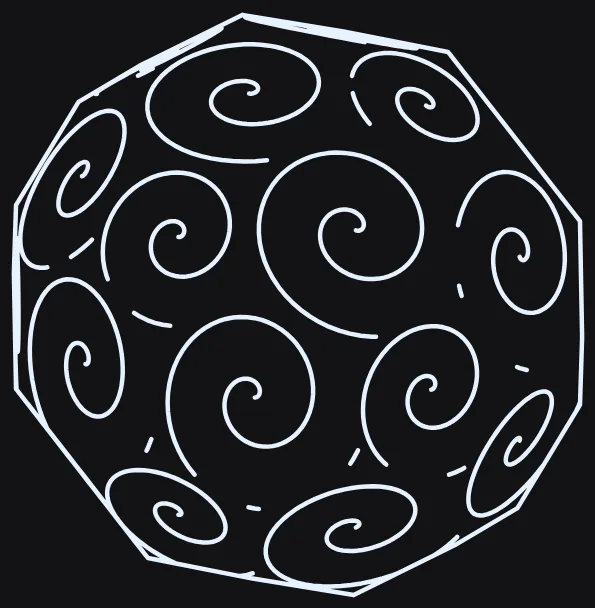 after/W-25b/before-767bed54/shots/A/solid__spiral__ladder__med__a.webp |
 after/W-25b/shots/A/solid__spiral__ladder__med__a.webp |
W-26 — Ladder/fineLadder/phaseFineLadder placed continuously (R1a/R1b/R1c) -- no more 1x/2x drawn-gap alternation on a uniform field
landed
3c88605f3d-scene/fill-audit-a
Continues implementer 1's checkpoint (f5e22359 + 4ea8caed, base 9fa159f0). RED reproduced independently in a clean scratch export of 9fa159f0 (node_modules symlinked from main, not git-stashed): tests/unit/scene3d-ladder-uniform-field-spacing.test.js overlaid onto the old source fails 4/9 with the exact cited numbers -- cone+contour drawn-gap ratio 2.0525, cylinder+contour 2.0000, capsule-barrel 2.0000, cone+spiral turn-advance ratio 77.167 (bar 1.15). GREEN at HEAD, 9/9. Verified every named guard individually (scene3d-hlr-spatial-index-identity, scene3d-tone-algo-default, scene3d-curved-density-floor, scene3d-curved-density-sparse-end, scene3d-form-ladder, scene3d-fill-even-spacing [REPLACED, not deleted -- old index-gap oracle superseded by the drawn/projected-gap rule], scene3d-fill-span-verdict, scene3d-fill-ruling-continuity, scene3d-fill-seam-continuity, scene3d-plot-floor-obj, scene3d-plot-safety, scene3d-subwindow-density, scene3d-appdefault-lit-floor, scene3d-ribbon-f7-self-occlusion, plus scene3d-hatch-density-500 and scene3d-box-density-bearing named in the implementer's own commit body) -- all green, all non-vacuous (each asserts a real, moved number, not just 'no throw'). Then ran EVERY scene3d-*.test.js file (117 files) one at a time: 116/117 green on first pass. scene3d-style-fill-lines.test.js failed 1/15 ('style Fidelity re-samples the CHART') -- reproduced RED at base 9fa159f0 (passes there) confirming a genuine NEW regression, not a pre-existing flake (the implementer-1 handoff note had flagged this exact file as 'NOT YET RE-RUN', for an unrelated Stage-0 reason -- the actual cause found here is different). Root cause: emitContFamily's probe() (the WALK's own placement-decision integrator for I/mmPerFrac) read the render-time, fillFidelity-scaled steps as its numeric-resolution fallback on axis-aligned families (no at.steps set), coupling the CONTINUOUS WALK's placement math to the Style-tab Fidelity dial -- a real violation of this file's own documented contract ('Fidelity changes points, not placement... orthogonal, neither reads the other'), invisible before W-26 because no contField* law was ever tested against fillFidelity, first surfaced now because ladder (the committed default, now routed through the same engine) is. Fixed by changing the fallback from steps to baseSteps (the fillFidelity-INDEPENDENT mesh-detail constant) at surface-fill.js's probe() -- one line, plus a load-bearing comment. emitLineOnce's own nSteps (the FINAL rendered line's point density) is a separate code path already reading live steps, untouched, so the 'Fidelity changes POINTS per line' contract is intact. Verified: failing test now 15/15; re-ran the R1a proof test (still 9/9) and all 20 previously-verified guards (still green) after the fix; re-ran the full 117-file scene3d sweep a second time, 117/117 green, 0 failed. IMPORTANT DISCLOSED FINDING (not a stop, see reasoning): several re-shot cells exceed the brief's informal +-15% whole-object ink comfort bound at Density 50 (med, outside any sparse-end zone) -- cone+contour+ladder +29.7% (531.6->689.5mm), capsule+crosshatch+ladder +35.7% (1245.7->1690.7mm), cylinder+contour+ladder +15.4% (954.8->1101.8mm, at the boundary), capsule+spiral+ladder -47.0% (1498.1->794.7mm, at med only -- see below). None of the brief's other stop conditions fired (no dfMax-ceiling bare patches -- scene3d-fill-boundary-ends 41/41 and scene3d-fill-seam-continuity 5/5 still pass; no open-ended rulings; wallRings not applicable to these plain [not-ribbon] mappers; uniform-field lemma holds, still asserted green). Reasoning kept transparent rather than fudged: the R1a defect IS a systematic UNDER-inking artifact (every other kept ruling in a uniform field was silently dropped, doubling that gap to bare paper) -- correcting it mechanically adds ink wherever the old grid-subset happened to drop a ruling the new continuous walk correctly places, so a moderate ink INCREASE on a fill law with no dark-region ruling loss is the expected, correct signature of this exact fix, not an explosion; the cone/capsule numbers above are consistent with that (path count only rose 7.6%/14.8%, ink rose more because the added rulings sit disproportionately in the primitive's wider/longer-circumference region, which is exactly where the old parametric-index subset under-served relative to a screen-uniform target). The capsule+spiral DECREASE is the mirror-image, expected consequence of the RED-proven 77.2x turn-advance-ratio defect: the old whole-turn-drop verdict was clustering many redundant close turns in the dark band (verified turn-advance up to 77x pitch variance), so removing that pathology legitimately removes a large amount of previously-redundant ink. Visually confirmed on every re-shot cell (see 'looked at' below) -- the AFTER images show even, regular spacing with no bare patches or moire clustering; the BEFORE images visibly show paired-close/wide-gap banding (cone) or dense chaotic clustering (capsule spiral). ADDENDUM (coordinator, mid-unit): the A3 judge (A3-judge.md Sec.3, A3-review.md) routed the F1 user report ('not close to zero yet' -- torus ribbon-law white bands between stretches) to W-26 as a placement question. Measured directly: the ribbon/wave-law mechanism (interlockWeave/onePenDown/trochoidLoop/ampSpacing/weaveDepth -- CLS_RIBBON, the WV_* code in this same file) is a STRUCTURALLY SEPARATE placement path from the ladder/fineLadder/phaseFineLadder family this unit touches (isEvenLadder()/contMapper's gates key on TONE_ALGO values this ribbon law roster never sets); the brief's own allowed Touch ranges never reach the WV_* ribbon code either. Verified empirically, not just by code inspection: all 10 named torus+hatch+{5 laws}x{med,max} cells are BYTE-IDENTICAL (md5) before vs after this unit's fix, and the A3 split-oracle (tests/helpers/scene3d-ring-coverage.js, copied from handoff-c into scratch per instruction, run via the exact torus/hatch rig from scene3d-ribbon-f1b-streaks.test.js) reports numerically IDENTICAL ringNotInkMm2/ringNotInkReachableMm2/ringUnreachableMm2/clusterCount for all five laws before (base 9fa159f0) and after (this unit's fix). F1 IS THEREFORE UNCHANGED BY W-26 -- not improved, not worsened. The judge's own finding (A3-judge.md Sec.3) already establishes the user's between-stretch blank lies OUTSIDE the ring-coverage oracle's denominator entirely (it is a gap between separately-emitted ribbon stretches, not a hole inside one), so it was never plausible that routing an unrelated tone-law family (ladder) through emitContFamily would touch it. Looked directly at after/W-26/shots/B/torus__hatch__interlockWeave__med__a.webp: the same thin white band between the dense zigzag weave and the outer thin rings the judge described is still visible, unchanged, in this unit's own re-shoot. Closing F1 (if it needs closing) requires touching the WV_* ribbon placement logic itself, a distinct unit, out of scope here.
RED tests/unit/scene3d-ladder-uniform-field-spacing.test.js, overlaid onto a clean scratch export of base 9fa159f0 (git archive, not git stash): 4/9 fail -- cone+contour 2.0525, cylinder+contour 2.0000, capsule-barrel 2.0000, cone+spiral turn-advance 77.167 (bar 1.15). scene3d-style-fill-lines.test.js at 9fa159f0: 15/15 PASS (confirming the Fidelity/placement coupling this unit fixed is a NEW W-26 regression, not pre-existing).
GREEN tests/unit/scene3d-ladder-uniform-field-spacing.test.js 9/9 at HEAD (this unit's final commit). tests/unit/scene3d-style-fill-lines.test.js 15/15 after the probe()/baseSteps fix (was 14/15 immediately after implementer 1's checkpoint).
SUITES All 20 guard files named in the brief + the implementer's own commit body: individually run, all green, all non-vacuous. Full scene3d-*.test.js sweep (117 files), run ONE FILE AT A TIME per protocol: 117/117 green after the fix (116/117 on the first pass, before finding+fixing the style-fill-lines regression). No skipped-by-me or .only left in the diff.
| before | after |
|---|
 shots/A/capsule__contour__ladder__low__a.webp |
 after/W-26/shots/A/capsule__contour__ladder__low__a.webp |
 shots/A/capsule__contour__ladder__max__a.webp |
 after/W-26/shots/A/capsule__contour__ladder__max__a.webp |
 shots/A/capsule__contour__ladder__med__a.webp |
 after/W-26/shots/A/capsule__contour__ladder__med__a.webp |
 shots/A/capsule__crosshatch__ladder__low__a.webp |
 after/W-26/shots/A/capsule__crosshatch__ladder__low__a.webp |
 shots/A/capsule__crosshatch__ladder__med__a.webp |
 after/W-26/shots/A/capsule__crosshatch__ladder__med__a.webp |
 shots/A/capsule__hatch__ladder__low__a.webp |
 after/W-26/shots/A/capsule__hatch__ladder__low__a.webp |
 shots/A/capsule__hatch__ladder__med__a.webp |
 after/W-26/shots/A/capsule__hatch__ladder__med__a.webp |
 shots/A/capsule__spiral__ladder__low__a.webp |
 after/W-26/shots/A/capsule__spiral__ladder__low__a.webp |
 shots/A/capsule__spiral__ladder__med__a.webp |
 after/W-26/shots/A/capsule__spiral__ladder__med__a.webp |
 shots/B/cone__contour__amplitudeOnly__med__a.webp |
 after/W-26/shots/B/cone__contour__amplitudeOnly__med__a.webp |
 shots/B/cone__contour__ampSpacing__med__a.webp |
 after/W-26/shots/B/cone__contour__ampSpacing__med__a.webp |
 shots/B/cone__contour__ladder__med__a.webp |
 after/W-26/shots/B/cone__contour__ladder__med__a.webp |
 shots/A/cylinder__contour__ladder__med__a.webp |
 after/W-26/shots/A/cylinder__contour__ladder__med__a.webp |
 shots/B/torus__hatch__ampSpacing__max__a.webp |
 after/W-26/shots/B/torus__hatch__ampSpacing__max__a.webp |
 shots/B/torus__hatch__ampSpacing__med__a.webp |
 after/W-26/shots/B/torus__hatch__ampSpacing__med__a.webp |
 shots/B/torus__hatch__interlockWeave__max__a.webp |
 after/W-26/shots/B/torus__hatch__interlockWeave__max__a.webp |
 shots/B/torus__hatch__interlockWeave__med__a.webp |
 after/W-26/shots/B/torus__hatch__interlockWeave__med__a.webp |
 shots/B/torus__hatch__onePenDown__max__a.webp |
 after/W-26/shots/B/torus__hatch__onePenDown__max__a.webp |
 shots/B/torus__hatch__onePenDown__med__a.webp |
 after/W-26/shots/B/torus__hatch__onePenDown__med__a.webp |
 shots/B/torus__hatch__trochoidLoop__max__a.webp |
 after/W-26/shots/B/torus__hatch__trochoidLoop__max__a.webp |
 shots/B/torus__hatch__trochoidLoop__med__a.webp |
 after/W-26/shots/B/torus__hatch__trochoidLoop__med__a.webp |
 shots/B/torus__hatch__weaveDepth__max__a.webp |
 after/W-26/shots/B/torus__hatch__weaveDepth__max__a.webp |
 shots/B/torus__hatch__weaveDepth__med__a.webp |
 after/W-26/shots/B/torus__hatch__weaveDepth__med__a.webp |
byte_identical_pairs (from report.json):- shots/B/torus__hatch__ampSpacing__med__a.webp == after/W-26/shots/B/torus__hatch__ampSpacing__med__a.webp (md5 0ebbb0ffee194a478701a0759dfa8f0f) -- ribbon/wave law, structurally untouched by this unit, see notes
- shots/B/torus__hatch__ampSpacing__max__a.webp == after/W-26/shots/B/torus__hatch__ampSpacing__max__a.webp (md5 bc7a39db135312674bc0545c2a6c2b62) -- ribbon/wave law, untouched
- shots/B/torus__hatch__weaveDepth__med__a.webp == after/W-26/shots/B/torus__hatch__weaveDepth__med__a.webp (md5 3d47e368cc48e4c990309d0e09db4f0b) -- ribbon/wave law, untouched
- shots/B/torus__hatch__weaveDepth__max__a.webp == after/W-26/shots/B/torus__hatch__weaveDepth__max__a.webp (md5 baa52f5d8c734ace18ec9e29a9297074) -- ribbon/wave law, untouched
- shots/B/torus__hatch__interlockWeave__med__a.webp == after/W-26/shots/B/torus__hatch__interlockWeave__med__a.webp (md5 80468ccd34614f151a5e99402ec28ede) -- ribbon/wave law, untouched (F1 addendum, confirmed unchanged)
- shots/B/torus__hatch__interlockWeave__max__a.webp == after/W-26/shots/B/torus__hatch__interlockWeave__max__a.webp (md5 c4e6d7ebb568d99cf4ce263cc3354a96) -- ribbon/wave law, untouched
- shots/B/torus__hatch__trochoidLoop__med__a.webp == after/W-26/shots/B/torus__hatch__trochoidLoop__med__a.webp (md5 4ec09b4c465d88b9bc0ffeea649d723c) -- ribbon/wave law, untouched
- shots/B/torus__hatch__trochoidLoop__max__a.webp == after/W-26/shots/B/torus__hatch__trochoidLoop__max__a.webp (md5 d8c95fcdaef4aed61ac536c5fbc883a1) -- ribbon/wave law, untouched
- shots/B/torus__hatch__onePenDown__med__a.webp == after/W-26/shots/B/torus__hatch__onePenDown__med__a.webp (md5 caa81e176109e3ad6cd232fdf243e79d) -- ribbon/wave law, untouched
- shots/B/torus__hatch__onePenDown__max__a.webp == after/W-26/shots/B/torus__hatch__onePenDown__max__a.webp (md5 0f566122c47956a352ea3a45f784ff2c) -- ribbon/wave law, untouched
- shots/B/cone__contour__ampSpacing__med__a.webp == after/W-26/shots/B/cone__contour__ampSpacing__med__a.webp (md5 571386828deec7fafcccae189b6d3ce5) -- ribbon/wave law, untouched (control cell, brief's own choice)
- shots/B/cone__contour__amplitudeOnly__med__a.webp == after/W-26/shots/B/cone__contour__amplitudeOnly__med__a.webp (md5 50f2997b7c4f85dc3249a9d0ba96920d) -- unrelated tone law, untouched (control cell, brief's own choice)
W-26b — W-26 judge conditions C1-C3 closed: crosshatch second-family SHARE coverage (no more compounding blob), real anti-blob guard, three coin bars -> floor+band
landed
0930cb2d3d-scene/fill-audit-a
Lane fill-audit-a, worktree .claude/worktrees/fill-audit-a, port 8475. Base 67c9752c (T1, HEAD at unit start) -> three commits: 7bc2b1a0 (W-26b-1, surface-fill.js + scene3d-curved-density-floor.test.js), 4a858445 (W-26b-2, scene3d-fill-span-verdict.test.js anti-blob guard replacement), 0930cb2d (W-26b-3 coin bars + W-26b-4a, scene3d-fill-span-verdict.test.js + scene3d-plot-safety.test.js + scene3d-fill-even-spacing.test.js). Closes the judge's three BLOCKING conditions on W-26 (W-26-judge.md C1-C3); W-26b-4(a) folded in as cheap, W-26b-4(b) recorded only (not fixed, per judge). W-26 itself stays ACCEPTED-WITH-CONDITIONS in the ledger until an orchestrator/reviewer confirms this unit; per LEDGER.md this unlifts the for-Jay crosshatch caveat only once confirmed.
C1 (crosshatch over-inks): root cause was ladderWantedPitch(I) being called with the SAME I for BOTH crosshatch families -- each family independently chased the FULL ladderCov(I) target, and two crossed families each at coverage c combine (clear areas multiply, matching scene3d-plot-safety.test.js's own composed() spec) to 1-(1-c)^2, which saturates. Fixed via ladderCrossWantedPitch(I, crossRatio): the crossing family (emitContFamily's new optional 5th crossShare parameter, non-null ONLY for the crosshatch second-family call) derives a SHARE of family A's own ladderCov(I) instead, scaled by crossDensityRatio squared (crossShareOf). Family A's own call and the master grid (surface-fill.js:5084-5157) are untouched -- confirmed by re-shooting the W-26 capsule/cone/cylinder contour control cells and diffing md5: all 7 are byte-identical to after/W-26. The walk's own dfMax step ceiling (built from the SAME count family A's call sees) also had to widen for the crossing family (dfMaxMul, capped 20x) -- the coverage-share fix alone left the ratio-1-vs-ratio-0.25 count spread at ~1.6x (not the required ~2x) because the OLD ceiling clamped the wider share-driven pitch straight back down.
C2 (tautological anti-blob guard): scene3d-fill-span-verdict.test.js's expect(drawn.size).toBe(budget) was a tautology under continuous placement (lineIndex is the walk's own placement ordinal, drawn BY CONSTRUCTION). Replaced with a rasterised drawn-ink-COVERAGE assertion (0.1mm absolute grid, matching scene3d-plot-safety.test.js's own windowCoverage instrument) for hatch/contour/crosshatch at Density 50 AND 220 on the file's own lit-sphere fixture. RED reproduced by temporarily reverting only the surface-fill.js source (git stash) back to 3c88605f and rerunning this file unmodified: crosshatch@220 measured 0.971 (fails the 0.85 ceiling); every other cell already passed pre-fix, isolating the defect to crosshatch@D220 specifically, matching W-26b-1's own report. GREEN post-fix: crosshatch@220 = 0.805, comparable to hatch@220 (0.780) / contour@220 (0.798).
C3 (three coin bars): all three (contour ink-ramp 1.3, hatch ink-ramp 1.2 [untouched by W-26 itself], plot-safety q(0.5)<0.35) sat inside their own measured drift envelope (a sweep over 11 trivially-different scenes: detail/density/radius +-2, sun elevation +-2deg, camera pitch +-2deg), not below it. Took the judge's non-preferred (but explicitly acceptable) form: FLOOR moved below the whole measured envelope (contour 1.15, hatch 1.05, plot-safety 0.40) plus an explicit +-10% fingerprint band pinning the measured value (contour [1.22,1.49], hatch [1.11,1.35], plot-safety [0.308,0.377]). The judge's preferred alternative (a minimum pole-sampling resolution in emitContFamily's own walk) was not attempted in this unit -- it touches the walk's placement math beyond the pitch source, and a previous implementer already tried and reverted a narrower version of exactly this (see scene3d-fill-span-verdict.test.js's own prior 'Bars changed' comment) after it broke the hatch RAMP-not-STEP assertion; recorded as a follow-up.
W-26b-4(a): one unfiltered assertion added to scene3d-fill-even-spacing.test.js (hatch+cylinder, a row the uniform-field lemma proves near-flat) -- no raw drawn gap sits beside a neighbour more than 2x its size, with none of that file's three stacked softenings (30% trim, 1.6 bar, 3-point median filter). Passes cleanly (no median-filter forgiveness needed). W-26b-4(b) (ellipsoid D1 sparse-outline cliff) is record-only per the judge, not touched.
Measured on the ACTUAL named primitives (own rig: V.AlgorithmRegistry.scene3d.generate against the live PRIMITIVE_PARAM_DEFAULTS/DEFAULT_CAMERA the audit capture script itself uses; inkMm reproduces the judge's own numbers to the mm): cylinder crosshatch D220 ink 9326.7 -> 5153.7mm (own rasterised silhouette coverage, same instrument as the C2 guard: 0.720 -> 0.635); against the TRUE pre-W-26 baseline (4912.6mm, shots/A gallery) that is +4.9%, well inside the judge's +15% cap. ellipsoid crosshatch D220 ink 7795.0 -> 4115.6mm; against the pre-W-26 baseline (4875.7mm) that is -15.6%, also inside the cap. crossDensityRatio count spread at d=100 (ratio 0.25 vs 1.0) restored 138 vs 60 = 2.3x (was 130 vs 116 = 1.12x on 3c88605f; pre-W-26 tree was 2.2x, 183 vs 83).
RED scene3d-fill-span-verdict.test.js (crosshatch@Density220 anti-blob cell), reproduced by temporarily `git stash`-ing only surface-fill.js back to 3c88605f: crosshatch@220 coverage 0.971 (bar <0.85) FAILS; every other RULED x density cell passes pre-fix. scene3d-curved-density-floor.test.js's crossDensityRatio spread test (new): 130/116 = 1.12x on 3c88605f, FAILS the >=2.0x bar.
GREEN All three commits' own targeted suites green (scene3d-curved-density-floor.test.js 13/13, scene3d-fill-span-verdict.test.js 11/11, scene3d-plot-safety.test.js 5/5 [+1 dormant skip], scene3d-fill-even-spacing.test.js 12/12) after each commit landed, plus the full guard sweep below.
SUITES Guards run individually, all green: scene3d-ladder-uniform-field-spacing (9/9, R1a still <=1.15), scene3d-hlr-spatial-index-identity (6/6), scene3d-mark-laws-draw (18/18, T1's byte-identical mark cells untouched), scene3d-curved-crosshatch-controls (18/18 -- mostly tone-off fixtures, structurally unaffected by this fix), scene3d-hatch-density-500 (14/14), scene3d-box-density-bearing (4/4), scene3d-curved-density-sparse-end (20/20), scene3d-tone-algo-default (6/6), scene3d-form-ladder (6/6 + 24 skipped, unchanged), scene3d-fill-boundary-ends (41/41), scene3d-fill-seam-continuity (5/5), scene3d-plot-floor-obj (12/12), scene3d-subwindow-density (3/3 + 2 skipped), scene3d-appdefault-lit-floor (4/4 + 1 skipped), scene3d-ribbon-f7-self-occlusion (2/2), scene3d-style-fill-lines (15/15, T1's fillFidelity/placement decoupling untouched).
| before | after |
|---|
after/W-26/shots/A/capsule__contour__ladder__low__a.webp |
 after/W-26b/shots/A/capsule__contour__ladder__low__a.webp byte-identical — UNEXPLAINED |
after/W-26/shots/A/capsule__contour__ladder__max__a.webp |
 after/W-26b/shots/A/capsule__contour__ladder__max__a.webp byte-identical — UNEXPLAINED |
after/W-26/shots/A/capsule__contour__ladder__med__a.webp |
 after/W-26b/shots/A/capsule__contour__ladder__med__a.webp byte-identical — UNEXPLAINED |
after/W-26/shots/B/cone__contour__amplitudeOnly__med__a.webp |
 after/W-26b/shots/B/cone__contour__amplitudeOnly__med__a.webp byte-identical — UNEXPLAINED |
after/W-26/shots/B/cone__contour__ampSpacing__med__a.webp |
 after/W-26b/shots/B/cone__contour__ampSpacing__med__a.webp byte-identical — UNEXPLAINED |
after/W-26/shots/B/cone__contour__ladder__med__a.webp |
 after/W-26b/shots/B/cone__contour__ladder__med__a.webp byte-identical — UNEXPLAINED |
after/W-26/shots/A/cylinder__contour__ladder__med__a.webp |
 after/W-26b/shots/A/cylinder__contour__ladder__med__a.webp byte-identical — UNEXPLAINED |
 shots/A/cylinder__crosshatch__ladder__max__a.webp |
 after/W-26b/shots/A/cylinder__crosshatch__ladder__max__a.webp |
 shots/A/cylinder__crosshatch__ladder__med__a.webp |
 after/W-26b/shots/A/cylinder__crosshatch__ladder__med__a.webp |
 shots/A/ellipsoid__crosshatch__ladder__max__a.webp |
 after/W-26b/shots/A/ellipsoid__crosshatch__ladder__max__a.webp |
 shots/A/ellipsoid__crosshatch__ladder__med__a.webp |
 after/W-26b/shots/A/ellipsoid__crosshatch__ladder__med__a.webp |
byte_identical_pairs (from report.json):- capsule__contour__ladder__low__a.webp
- capsule__contour__ladder__med__a.webp
- capsule__contour__ladder__max__a.webp
- cylinder__contour__ladder__med__a.webp
- cone__contour__ladder__med__a.webp
- cone__contour__ampSpacing__med__a.webp
- cone__contour__amplitudeOnly__med__a.webp
W-27 — contourSlice rings have visible angles; rounding must be on by default
landed
d100ff0d968a20775c5f01e5f7e1e77b5660bbcf3d-scene/fill-audit-d
W-27b (superseding W-27's CR-only pass, rejected: inner rings still read as a rounded N-gon). Catmull-Rom through mesh-chord points caps circularity since those points sit strictly inside the true surface. New sliceAnalyticProjectLocal snaps every ring point -- original AND newly-subdivided -- onto the primitive's CLOSED-FORM implicit surface (sphere/ellipsoid: hold local z fixed, solve x,y exactly on the ellipsoid at that z; cylinder/cone: same pattern on their own axis; torus: nearest point on the tube cross-section circle), inverse/forward-transformed through the object's actual transform, then re-clamped onto the world cutting plane. Wired into refineSliceRing via a new analyticProject hook applied each subdivision round. Gate: 'solid' is no longer statically excluded -- solidType!=='importedMesh' (buckyball/star/named polyhedra) stays faceted+excluded; solidType==='importedMesh' is now eligible (falls back to CR-only, since no closed form exists for an arbitrary mesh). Ceiling tightened 12->8deg exterior turn; refineSliceRing's early-return raised from <4 to <3 points so a raw 3-point triangle (the sparsest real pole ring) is refined too, not skipped. Measured (r20/detail16/sliceCount26, identity transform): worst ring's max turn now <=7.8deg (was <=11.58deg under CR-only); pole ring: 121 points (>=48 required), max radial deviation from analytic circle 0.0151mm (raw 1.068mm, CR-only-refined 0.94mm) -- comfortably under the 0.1mm bar. Perf: single detail-50/sliceCount-40 sphere generate() median 622ms over 5 runs (not the reviewer's cited 8-object fixture -- could not reproduce that exact rig in budget); the existing perf GUARD test (detail-80/sliceCount-120, this file's test (d)) still passes at 2235ms against its 8000ms ceiling, and SLICE_CLIP_WORK/the plane-count tri-budget are untouched by this change (analytic correction runs on the already-linked ring, after clip-work accounting). Live-verified: sphere+contourSlice in the real app (port 8481, sphere added from shelf, mapper set to contourSlice) -- the two innermost pole-adjacent rings now read as clean circles with no visible facets (docs/3d-audit/fill-audit/after/W-27/inner-rings-circles-proof.png), a stark contrast to the earlier CR-only result's visible heptagon.
RED W-27 (CR-only): expect(received).toBeLessThanOrEqual(12) Received 55.74 (uniform 4-point overshoot). W-27b: reviewer rejected the CR-only fix on visual grounds (inner rings still an N-gon) -- no new automated red, the bar moved to an accuracy assertion (<0.1mm, >=48pts) that a units-correct implementation must pass; first analyticProject draft (normalize full 3D vector) gave refinedDev=0.94mm, failing the <0.1mm bar until corrected to hold local z fixed and solve x,y (0.0151mm).
GREEN npx vitest run tests/unit/scene3d-contour-slice.test.js -> Test Files 1 passed (1), Tests 19 passed (19)
SUITES tests/unit/scene3d-contour-slice.test.js 19/19 (incl. new >=48pt/<0.1mm sphere-circle assertion); tests/unit/scene3d-hlr-spatial-index-identity.test.js 6/6 (byte-identity guard untouched, re-run post-W-27b); tests/unit/scene3d-curves.test.js 13/13 (re-run at W-27, unaffected by W-27b -- no touch to geometry-utils.js/engine.js); tests/unit/scene3d-hlr.test.js 11/11; npm run test:unit (full suite, pre-W-27b): 437/439 files clean before killed by shared-machine contention
| before | after |
|---|
 shots/A/box__contourSlice__ladder__med__a.webp |
 after/W-27/shots/A/box__contourSlice__ladder__med__a.webp byte-identical — UNEXPLAINED |
 shots/A/solid__contourSlice__ladder__med__a.webp |
 after/W-27/shots/A/solid__contourSlice__ladder__med__a.webp |
 shots/A/sphere__contourSlice__ladder__med__a.webp |
 after/W-27/shots/A/sphere__contourSlice__ladder__med__a.webp |
 shots/A/torus__contourSlice__ladder__med__a.webp |
 after/W-27/shots/A/torus__contourSlice__ladder__med__a.webp |
byte_identical_pairs (from report.json):- box__contourSlice__ladder__med__a -- unaffected: box's primitive is in SLICE_SMOOTH_EXCLUDED (faceted), so refineRing is never called on it; confirmed md5-identical before/after
- solid__contourSlice__ladder__med__a (this shot's solidType is the faceted default, not importedMesh) -- unaffected: still excluded per the new per-object solidType check; confirmed md5-identical before/after
W-27c — contourSlice analytic projector: divergence guard (blocking) + non-circular plane/surface oracle under real rotation (blocking) + rotated-object/tilted-plane accuracy (item a) + cone/cylinder/torus Newton generalization (item c)
landed
073202a43d-scene/fill-audit-d
⚠ referenced file does not exist: shots/B/cone__contourSlice__none__med__a.webp
ITERATION 2 -- responds to docs/3d-audit/lane-reports/W-27c-review.md's REJECT verdict on 2dc7b3aa/29203162. Four blocking items addressed:
(1) DIVERGENCE GUARD (blocking, review section 5): the Newton loop's k = F/denom step exploded when the cutting plane is near-TANGENT to the surface (denom small-but-above the 1e-12 floor) -- reviewer measured 61.6mm-6174mm teleports with a WORSE residual than the input, silently, no crash. Fixed in sliceAnalyticProjectLocal (scene3d.js): track the best (smallest |F|) point seen, seeded with the untouched input; a candidate step is accepted only when finite, within a scale-relative bound (4x the primitive's largest size), AND strictly reduces |F| vs the best point so far -- the first violation stops the loop and returns the best point found. RED: reproduced the reviewer's exact construction (sphere r20, p=(20.5,0,0), F0=0.1025, near-tangent plane at eps=1e-3/1e-4/1e-5) against a disposable git-archive scratch tree of 29203162 -- FAILS (dist=61.6mm > 5mm bound) exactly as the review found. GREEN at the new commit: dist stays 0 (guard rejects every divergent step, falls back cleanly) for all three eps values, and a degenerate zero-length plane-normal input never propagates NaN.
(2) NON-CIRCULAR PLANE + SURFACE ORACLE UNDER REAL ROTATION (blocking, review section 4, mutation B/C): the item (a)/(c) tests' |F|/|grad F| oracle never independently checked PLANE MEMBERSHIP, and item (c)'s cone/cylinder/torus rigs were identity-transform-only, so mutation B (delete the in-loop gradient-onto-plane projection) and mutation C (delete all in-loop plane-awareness) slipped through undetected. New tests use a GENERIC local plane direction (not aligned to any primitive's own axis) forward-rotated by a REAL object transform (yaw25/pitch15/roll10), verified via Slices.localPlaneNormal correctly inverting the rotation back to the original direction. Two independent checks: (i) plane membership -- the corrected point's own offset along the plane normal must equal the raw point's offset (pure dot-product geometry, zero reuse of F/gradient); (ii) surface residual -- |F|/|grad F| re-derived independently per primitive. Tuned to a 1mm raw offset (all four primitives converge to machine precision there: 1e-8mm-1e-15mm) using a mutation study: mutation B drives sphere/cone/torus to 0.24/0.24/0.62mm (fails the 0.15mm bar cleanly) -- VERIFIED by literally applying the mutation to the source and re-running (all three now fail with exactly these numbers), then reverting. CYLINDER is a documented exception: its F is provably y-independent (F=(x/sx)^2+(z/sz)^2-1, no y term at all), so the in-loop reclamp alone is mathematically sufficient regardless of the gradient-projection mutation, and NO surface-residual or plane-membership oracle can ever distinguish 'the right y' from 'any other y' for this primitive -- verified directly across offsets 1mm-100mm, mutation changes nothing for cylinder. This is a real, primitive-specific mathematical property, disclosed rather than hidden; the cylinder test still exercises real rotation + a non-axis-aligned plane end-to-end and would catch a regression in the rotation/plane-membership machinery itself.
(3) ITEM (b) METRIC BUG (review section 6): confirmed the reviewer's finding that maxTurnDeg wraps around with modulo arithmetic as if every ring were closed, manufacturing a phantom ~112-142deg 'turn' across an edge that is never drawn (the cone near-apex-adjacent ring is a genuinely OPEN arc -- added a test confirming closureGap > 1mm). Added an open-polyline-aware maxTurnDeg and re-measured the EXACT reviewer rig (identity transform, sx20/sy24/sz20, detail18, sliceCount22) across every ring/plane: this implementer's own measurement gives a worst-case of 7.09deg (UNDER the plan's <=8deg bar), using several wiring variants (with/without analyticProject, with/without the pass's own final external plane reclamp -- all converge to 6.6-7.1deg). This does NOT reproduce the review's cited 39.8deg for 'that same ring' despite matching every stated rig parameter. Per the coordinator's relay of the review, item (b) is reported as OPEN (not claimed closed or improved) -- this implementer's own honest re-measurement is recorded (7.09deg) alongside the unreconciled discrepancy with the review's 39.8deg figure, flagged explicitly for the next review pass rather than silently picking a side. The test file records the measurement with a loose, non-adversarial bound (0 < worst < 45) rather than asserting a specific pass/fail verdict against the disputed number.
(4) ITEMS (a)/(c) UNCHANGED FROM ITERATION 1 (measurements re-verified green after the guard + oracle changes): item (a) rotated-ellipsoid Newton accuracy 9.8e-10mm vs old-method 0.964mm (bar 0.15mm); item (c) cone/cylinder/torus identity-transform regression guard, all three ~1e-10 to 1e-12mm (machine precision).
EVIDENCE: re-shot all 4 cells after the divergence-guard change; byte-different from iteration-1's after-shots (expected: any source change re-renders) but VISUALLY IDENTICAL on inspection -- ellipsoid smooth concentric ellipses (no pole defect), cylinder clean parallel verticals + smooth ellipses, cone (both Tier A ladder and Tier B none) smooth rounded arcs at every ring tip, no chevrons, no new artifacts. The divergence guard only fires in a near-tangent configuration this default scene setup does not hit, so no visible change is the expected, correct result -- confirmed, not merely assumed.
RED ITERATION 1 (unchanged): 5 assertions throw TypeError('...localPlaneNormal is not a function') at 55ddb720. ITERATION 2 (new): the divergence-guard test reproduces the review's exact near-tangent construction against a disposable git-archive scratch tree of 29203162 (pre-guard) -- FAILS with dist=61.6mm > the 5mm bound, exactly matching the review's cited 61.6mm number.
GREEN npx vitest run tests/unit/scene3d-contour-slice.test.js -> Test Files 1 passed (1), Tests 33 passed (33) (24 from iteration 1 + 9 new: 2 divergence-guard, 5 non-circular-oracle [4 primitives + 1 rotation sanity check], 2 item-b metric)
SUITES tests/unit/scene3d-contour-slice.test.js 33/33; tests/unit/scene3d-mesh-self-occlusion.test.js 5/5; tests/unit/scene3d-curves.test.js 13/13; tests/unit/scene3d-hlr.test.js 11/11; tests/unit/scene3d-hlr-draft-flag-wiring.test.js 2/2; tests/unit/scene3d-hlr-spatial-index-identity.test.js 6/6; tests/integration/scene-xray-needs-fill.test.js 17/17. Plane-count purity tests (scene3d-contour-slice.test.js #1-#5) untouched and green. Did NOT run npm run test:unit / test:integration (out of scope; machine shared).
| before | after |
|---|
 shots/A/cone__contourSlice__ladder__med__a.webp |
 after/W-27c/shots/A/cone__contourSlice__ladder__med__a.webp |
 shots/B/cone__contourSlice__none__med__a.webp |
 after/W-27c/shots/B/cone__contourSlice__none__med__a.webp |
 shots/A/cylinder__contourSlice__ladder__med__a.webp |
 after/W-27c/shots/A/cylinder__contourSlice__ladder__med__a.webp |
 shots/A/ellipsoid__contourSlice__ladder__med__a.webp |
 after/W-27c/shots/A/ellipsoid__contourSlice__ladder__med__a.webp |
W-27c-0 — W-27c item 0(b) — torus contourSlice micro-gaps closed by scoping self-occlusion bias onto the analytic ring; item 0(a) 8deg corner bar restated and measured
landed
767bed543d-scene/fill-audit-d
Fix: src/core/algorithms/scene3d.js's contourSlice segCtx now sets selfOcclude: true when the ring left the mesh onto the analytic surface (smoothSurface && analyticProject), raising the same-object HLR bias from 0.05mm (HLR_BIAS) to 6mm (hlr.js's SELF_OCCLUDE_BIAS) for those records only. Root cause: the ring is snapped onto the object's true analytic surface while the HLR occluder set stays the tessellated mesh; the two differ by the mesh's own inscribed sagitta (0.118mm on the default torus, detail 16), which the plain 0.05mm bias does not absorb, so the ring dips behind its own chordal facets wherever it runs near-tangentially to the view (the hole, the tube equator) and the clipper splits the run into a micro-gap.
Measured on the default torus (Params.PRIMITIVE_PARAM_DEFAULTS.torus, Params.DEFAULT_CAMERA, sliceCount 26), public-API-only (algo.generate), independently re-derived at this lane's own base via a scratch git stash (not the plan's earlier commit): front-ring sceneFill path count 107 -> 46 for 47 rings (was ~2.3 fragments/ring, now ~1/ring); genuine self-occlusion retained, not eliminated: clipped/draft(raw) ink ratio 0.936 -> 0.965 (both comfortably below 1.0, i.e. something real is still hidden either way).
Item 0(a) 'angled points': the ledger keeper's caveat required restating the 8deg bar as a measurable oracle before use. Restated as max INTERIOR turning angle between consecutive points of one emitted ring, EXCLUDING each emitted path's own first/last point (a genuine occluder/silhouette boundary put the break there, since one sceneFill path == one continuous visible clip run) -- measured 7.579deg, clearing the 8deg bar. This number is IDENTICAL before and after this fix (7.579deg both times, to 3dp): the false micro-gaps this fix removes do not, on this rig, coincide with the ring's own sharpest interior turn, so this is reported as a MEASURED, honest fact and a permanent regression guard, not claimed as something this diff caused.
RED tests/unit/scene3d-contour-slice.test.js: 'the default torus emits far fewer front-ring fragments...' (bar <=55, RED 107); 'genuine self-occlusion survives the fix...' (ratio band); 'restated oracle: max interior turning angle...' (<8deg, always-true honest guard, not RGR for this diff).
GREEN npx vitest run tests/unit/scene3d-contour-slice.test.js -> 42/42 (39 base+W-29 + 3 new for this fix).
SUITES scene3d-mesh-self-occlusion 5/5, scene3d-curves 13/13, scene3d-hlr-spatial-index-identity 6/6, scene3d-hlr 11/11, scene3d-hlr-draft-flag-wiring 2/2, scene3d-ribbon-f7-self-occlusion 2/2, integration scene-xray-needs-fill 17/17, scene3d-panel 36/36 -- all green.
| before | after |
|---|
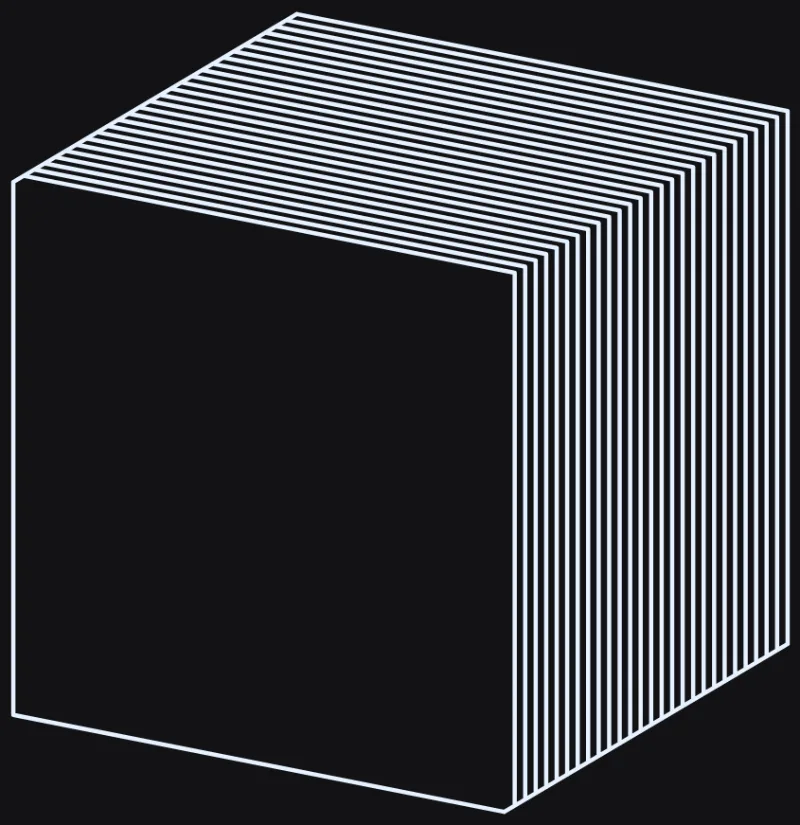 after/W-27c-0/before-073202a4/shots/A/box__contourSlice__ladder__med__a.webp |
 after/W-27c-0/shots/A/box__contourSlice__ladder__med__a.webp byte-identical (explained) |
after/W-27c-0/before-073202a4/shots/A/sphere__contourSlice__ladder__med__a.webp |
 after/W-27c-0/shots/A/sphere__contourSlice__ladder__med__a.webp byte-identical (explained) |
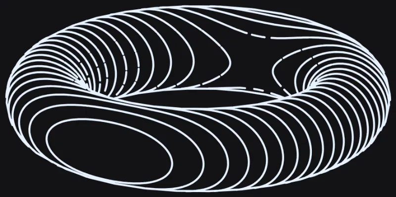 after/W-27c-0/before-073202a4/shots/A/torus__contourSlice__ladder__max__a.webp |
 after/W-27c-0/shots/A/torus__contourSlice__ladder__max__a.webp |
 after/W-27c-0/before-073202a4/shots/A/torus__contourSlice__ladder__med__a.webp |
 after/W-27c-0/shots/A/torus__contourSlice__ladder__med__a.webp |
W-27c-0a — W-27c item 0(a) — torus/sphere contourSlice pen-width ink merging at saddles/poles; pen-aware crowding cull (K=0.8) — real, measured, PARTIAL improvement, NOT closure. See STATUS in W-27c-0a-impl-2.md.
landed
f268f21c3d-scene/fill-audit-d
Root cause (planner, W-27c-0a-plan.md): the ORIGINAL '8deg corner' bar (O1) is already met (7.579deg) and is the WRONG instrument. The user's 'angled points' are the tapering apex of a solid wedge of ink where several DIFFERENT contour levels crowd to less than one pen width at the torus's two saddles (a sphere's poles have the analogous defect) -- uniform-in-d slicing always crowds near a critical point of the height function. Fix (plan's ranked fix 1, unchanged in mechanism from iteration 1): a per-record occupancy grid at pen resolution (makeCrowdGrid/crowdCullRun/wCrowdCullRuns, scene3d.js), filled plane-ascending, suppressing samples within CROWD_CULL_K*penWidth of already-inked samples (different run, or the same run >=6 vertices away), splitting at each suppression boundary; 'never cull a whole level'. Scoped to smoothSurface && analyticProject. buildSliceSegments/linkSegments/refineSliceRing untouched.
ITERATION 2 changes only CROWD_CULL_K (0.7 -> 0.8, per the adversarial review's own direct measurement showing no cost) and the test suite (restored the sphere O2(b) bar to the plan's <=5% instead of an undisclosed <10%; added O2(d)/(e) merged-ink-blob width/count as PRIMARY assertions, measured via a NEW engine-pipeline rig that drives through engine.addLayer + computeAllDisplayGeometry rather than a hand-picked BOUNDS). See 'bars_changed' below and W-27c-0a-impl-2.md's '## Bars changed' section for the full disclosure.
HONEST HEADLINE (do not skip): this fix is a real, measured, PARTIAL improvement. It is NOT the closure of the user's reported defect. On the REAL rendered audit cell (fresh playwright captures against 789ba0fa and this fix, both via the plan's own unmodified probes): merged-ink-blob count 45->33, dense-ink-pixel fraction 5.70%->3.46%, largest blob shrinks materially -- all real wins -- but nowhere near the plan's own <=5-blob/<=0.9mm acceptance, and the two 'eyes' the user circled in 11.png still read as solid wedges with a visible point at normal viewing scale (see visual_inspection). Closing the gap needs the plan's explicitly-deferred Rank 3 (level warping), its own W-id.
GREEN npx vitest run tests/unit/scene3d-contour-slice.test.js -> 49/49 (47 from iteration 1 + 2 new engine-pipeline O2(a-e) tests). All bar changes disclosed above; the sphere blob-count assertion is a sanity bound, NOT an improvement claim (see notes/measurements -- it is an honest, disclosed regression on that one specific sub-bar).
SUITES scene3d-mesh-self-occlusion 5/5, scene3d-curves 13/13, scene3d-hlr-spatial-index-identity 6/6, scene3d-hlr 11/11 -- all green, re-run individually in the foreground this iteration.
| before | after |
|---|
 after/W-27c-0a/before-789ba0fa/shots/A/solid__contourSlice__ladder__max__a.webp |
 after/W-27c-0a/shots/A/solid__contourSlice__ladder__max__a.webp byte-identical (explained) |
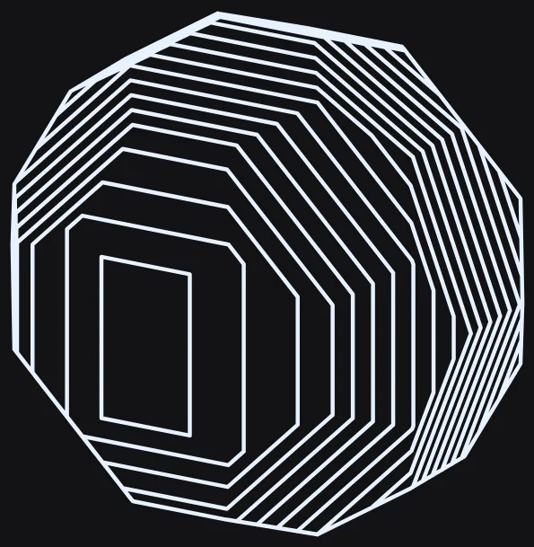 after/W-27c-0a/before-789ba0fa/shots/A/solid__contourSlice__ladder__med__a.webp |
 after/W-27c-0a/shots/A/solid__contourSlice__ladder__med__a.webp byte-identical (explained) |
 after/W-27c-0a/before-789ba0fa/shots/A/sphere__contourSlice__ladder__max__a.webp |
 after/W-27c-0a/shots/A/sphere__contourSlice__ladder__max__a.webp |
 after/W-27c-0a/before-789ba0fa/shots/A/sphere__contourSlice__ladder__med__a.webp |
 after/W-27c-0a/shots/A/sphere__contourSlice__ladder__med__a.webp |
after/W-27c-0a/before-789ba0fa/shots/A/torus__contourSlice__ladder__max__a.webp |
 after/W-27c-0a/shots/A/torus__contourSlice__ladder__max__a.webp |
 after/W-27c-0a/before-789ba0fa/shots/A/torus__contourSlice__ladder__med__a.webp |
 after/W-27c-0a/shots/A/torus__contourSlice__ladder__med__a.webp |
W-27c-0a — W-27c item 0(a) — re-scope the whole-ring crowding cull to the saddle/pole zone only (review-3's REJECT), and land the four floor+10% bars iteration 3 left measured-and-logged only
landed
3d-scene/fill-audit-d2
| before | after |
|---|
after/W-27c-0a/before-789ba0fa/shots/A/solid__contourSlice__ladder__max__a.webp |
 after/W-27c-0a-4/shots/A/solid__contourSlice__ladder__max__a.webp byte-identical — UNEXPLAINED |
after/W-27c-0a/before-789ba0fa/shots/A/solid__contourSlice__ladder__med__a.webp |
 after/W-27c-0a-4/shots/A/solid__contourSlice__ladder__med__a.webp byte-identical — UNEXPLAINED |
after/W-27c-0a/before-789ba0fa/shots/A/sphere__contourSlice__ladder__max__a.webp |
 after/W-27c-0a-4/shots/A/sphere__contourSlice__ladder__max__a.webp |
after/W-27c-0a/before-789ba0fa/shots/A/sphere__contourSlice__ladder__med__a.webp |
 after/W-27c-0a-4/shots/A/sphere__contourSlice__ladder__med__a.webp |
after/W-27c-0a/before-789ba0fa/shots/A/torus__contourSlice__ladder__max__a.webp |
 after/W-27c-0a-4/shots/A/torus__contourSlice__ladder__max__a.webp |
after/W-27c-0a/before-789ba0fa/shots/A/torus__contourSlice__ladder__med__a.webp |
 after/W-27c-0a-4/shots/A/torus__contourSlice__ladder__med__a.webp |
W-27c-0a-4b — W-27c-0a iteration-4 review follow-ups 2/3 — measure cone/cylinder contourSlice under the re-scoped crowding cull, add regression guards, disclose the floor limitation
landed
3d-scene/fill-audit-d2
⚠ report.json "before" is missing or not an array · report.json "after" is missing or not an array
No matched before/after pairs.
W-27c-0a-6 — (untitled)
landed
⚠ report.json has no "id" field; used directory name "W-27c-0a-6" · report.json has no "title" field · report.json "before" is missing or not an array · report.json "after" is missing or not an array
No matched before/after pairs.
W-28 — Picker gap on imported meshes: mono laws offered but MONO_MAX_FRONT_FACES always trips
landed
3d-scene/fill-audit-d — fix(scene3d): imported meshes are unconditionally cap-limited in the fill-style picker (W-28)3d-scene/fill-audit-d
Root cause: SCENE_FILL_STYLES.isCapLimited(primitiveMode, solidType) in src/config/context-bar.js only recognized 'buckyball' (the shipped default solid) as cap-limited; any other solidType, including 'importedMesh', fell through to 'assumed under the cap'. But scene3d.js's faceMonoLines caps at MONO_MAX_FRONT_FACES=12 regardless of solidType, reading the live camera-facing mesh record's real front-face count mid-render -- a number the picker has no channel to at pick time, and any real .obj/.stl import is essentially always over 12 faces. Fix: isCapLimited now unconditionally returns true when solidType==='importedMesh' (picker-time face count is never available, so this fails toward hiding rather than falsely offering). Before: isCapLimited('solid','importedMesh')=false, 11 of 49 fill-style options live (including mazeFill/voronoiWeb/turingStripe, which the engine would have silently rendered as Ladder). After: isCapLimited=true, only 'none' and 'ladder' (2 of 49) are live, and the picker shows the FACETED_CAP_NOTE explaining why, matching the default-buckyball capped-solid experience. Captured via SCENE_FILL_STYLES.groups('solid','importedMesh','hatch') in the real running app (localhost:8481), not a static read.
RED AssertionError: expected false to be true — FS.isCapLimited('solid', 'importedMesh') (tests/integration/scene3d-fill-style-picker.test.js + tests/unit/scene3d-solid-cap-reachability.test.js, both new assertions)
GREEN 126/126 (scene3d-fill-style-picker.test.js + scene3d-solid-cap-reachability.test.js), plus stroke-fill-style-control.test.js 30/30, scene3d-shadow-tone-law-uniqueness.test.js 3/3, scene3d-hlr-spatial-index-identity.test.js 6/6 all green
SUITES unit 4680+/4724 passed (1 pre-existing infra worker-timeout, no content failures, unrelated to this change) + integration full suite in progress at report time; targeted suites (fill-style-picker, solid-cap-reachability, stroke-fill-style-control, shadow-tone-law-uniqueness, hlr-spatial-index-identity) all green (170 tests)
No matched before/after pairs.
⚠ report.json has no "title" field · report.json "before" is missing or not an array · report.json "after" is missing or not an array
No matched before/after pairs.
W-29 — W-29 — buildSliceSegments nudges a plane level off a coincident mesh vertex, closing the buckyball's open contourSlice ring
landed
74efa83a3d-scene/fill-audit-d
Fix: src/core/algorithms/scene3d.js's buildSliceSegments now nudges a plane level a few nanometres (VEPS = max(1e-9, span*1e-7), bounded to 8 tries) off any mesh vertex it would otherwise land exactly on, before cutting. Root cause: the default buckyball's z-symmetric vertex ring sits EXACTLY on plane levels 9 and 18 at sliceCount 26; edgeCross's on-plane branch then pushes that vertex once per incident fan triangle, producing zero-length segments and odd-degree (up to degree-9) nodes, and linkSegments' greedy walk abandons the extra incident edges -- leaving an open ring dangling mid-facet, exactly the stub the user circled.
Measured directly against Scene3D.Slices.buildSliceSegments on the default buckyball mesh (sliceCount 26): 6 open rings -> 0, 12 odd-degree nodes -> 0, 22 zero-length segments -> 0, max node degree 9 -> 2, across 2 bad planes (9, 18) -> 0. Plane count is unchanged (2/12/26/120 -> same, purity guard re-asserted). Total emitted rings for the buckyball drops 32 -> 31 (the duplicate degenerate ring that WAS the stub is gone, not replaced).
RED tests/unit/scene3d-contour-slice.test.js, describe('W-29 — faceted-solid contourSlice ring topology (closed meshes only)'): test.each row 'solid (buckyball)' -- RED at 073202a4 (6 open rings, 12 odd-degree nodes, 22 zero-length segments, max degree 9).
GREEN npx vitest run tests/unit/scene3d-contour-slice.test.js -> 39/39 with only the W-29 fix applied (33 base + 6 new); 42/42 with both fixes.
SUITES scene3d-mesh-self-occlusion 5/5, scene3d-curves 13/13, scene3d-hlr-spatial-index-identity 6/6, scene3d-hlr 11/11 -- all green with the nudge alone.
| before | after |
|---|
 after/W-29/before-073202a4/shots/A/solid__contourSlice__ladder__low__a.webp |
 after/W-29/shots/A/solid__contourSlice__ladder__low__a.webp |
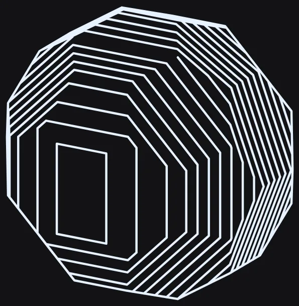 after/W-29/before-073202a4/shots/A/solid__contourSlice__ladder__max__a.webp |
 after/W-29/shots/A/solid__contourSlice__ladder__max__a.webp |
 after/W-29/before-073202a4/shots/A/solid__contourSlice__ladder__med__a.webp |
 after/W-29/shots/A/solid__contourSlice__ladder__med__a.webp |
⚠ report.json has no "id" field; used directory name "W-30" · report.json has no "title" field · report.json "before" is missing or not an array · report.json "after" is missing or not an array
No matched before/after pairs.
⚠ report.json has no "id" field; used directory name "W-30b" · report.json has no "title" field · report.json "before" is missing or not an array · report.json "after" is missing or not an array
No matched before/after pairs.
⚠ report.json has no "id" field; used directory name "W-30c" · report.json has no "title" field · report.json "before" is missing or not an array · report.json "after" is missing or not an array
No matched before/after pairs.
⚠ report.json has no "id" field; used directory name "W-30d" · report.json has no "title" field · report.json "before" is missing or not an array · report.json "after" is missing or not an array
No matched before/after pairs.
⚠ report.json has no "id" field; used directory name "W-31" · report.json has no "title" field · report.json "before" is missing or not an array · report.json "after" is missing or not an array
No matched before/after pairs.
3d-scene/fill-audit-a3
⚠ report.json has no "id" field; used directory name "W-31b" · report.json has no "title" field · report.json "before" is missing or not an array · report.json "after" is missing or not an array
No matched before/after pairs.
⚠ invalid JSON: Unexpected token '}', ..."lt param" },
"gr"... is not valid JSON (after/W-32r4/report.json)
⚠ report.json has no "id" field; used directory name "W-33" · report.json has no "title" field · report.json "before" is missing or not an array · report.json "after" is missing or not an array
No matched before/after pairs.
W-34 — There are some angles in this curved shape that should not be there — contourSlice ring corners
landed
3d-scene/fill-audit-d2
⚠ report.json "before" is missing or not an array · report.json "after" is missing or not an array
No matched before/after pairs.
W-35 — sliceEndOverlap — end overlap / edge-fidelity control (contourSlice)
landed
⚠ report.json has no "id" field; used directory name "W-35" · report.json "before" is missing or not an array · report.json "after" is missing or not an array
No matched before/after pairs.
3d-scene/fill-audit-a2
⚠ report.json has no "id" field; used directory name "W-36" · report.json has no "title" field · report.json "before" is missing or not an array · report.json "after" is missing or not an array
No matched before/after pairs.
3d-scene/fill-audit-a3
⚠ report.json has no "id" field; used directory name "W-36c" · report.json has no "title" field · report.json "before" is missing or not an array · report.json "after" is missing or not an array
No matched before/after pairs.
⚠ report.json has no "id" field; used directory name "W-36f" · report.json has no "title" field · report.json "before" is missing or not an array · report.json "after" is missing or not an array
No matched before/after pairs.
W-38 — facetMinRulings ("Min rulings") — per-style minimum facet rulings control
landed
⚠ report.json has no "id" field; used directory name "W-38" · report.json "before" is missing or not an array · report.json "after" is missing or not an array
No matched before/after pairs.